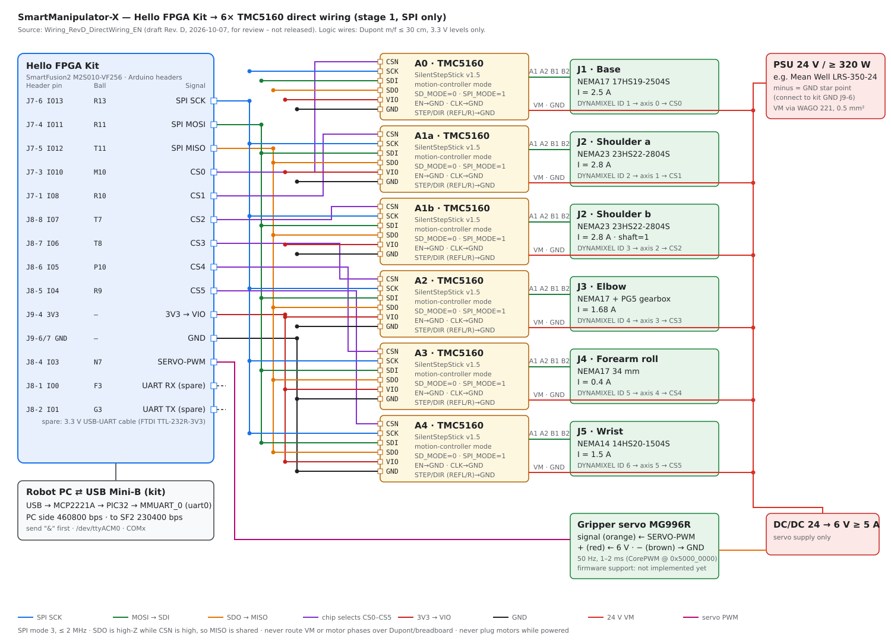
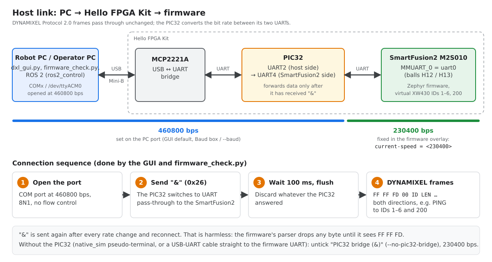
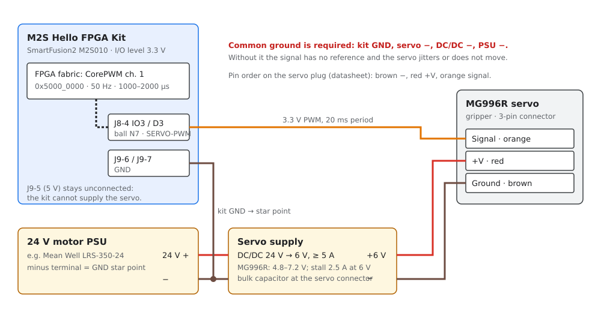
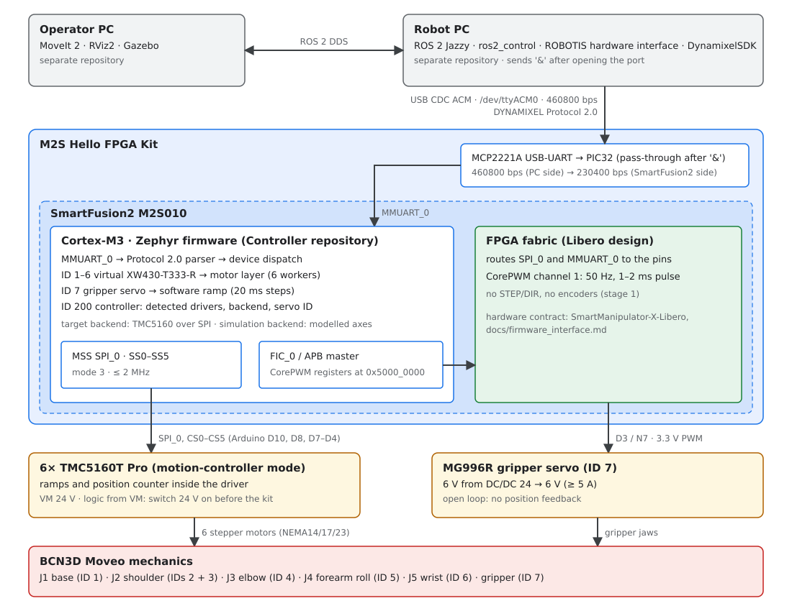

SmartManipulator-X robot arm
SmartManipulator-X
Robot PC, controller firmware, hardware and system architecture
OpenMANIPULATOR-X software concepts on BCN3D Moveo mechanics: ROS 2 Robot PC, SmartFusion2 controller firmware exposing the stepper axes as virtual DYNAMIXEL devices, hardware and wiring.
| Document version | e46a4c4 |
|---|---|
| Date | 2026-10-11 |
| Robot PC | Ubuntu 24.04, ROS 2 Jazzy in Docker |
| Controller | Microchip SmartFusion2 M2S Hello FPGA Kit (M2S010), Zephyr RTOS |
| Protocol | DYNAMIXEL Protocol 2.0, 230400 bps |
| Author | Anton Vynohradov |
| Repository | https://github.com/AntonVynohradov/SmartManipulator-X-Robot-PC |
SmartManipulator-X¶
SmartManipulator-X is a robot arm project. It combines the ROS 2 control and operator-software concepts of ROBOTIS OpenMANIPULATOR-X with the mechanical design of BCN3D Moveo. Instead of DYNAMIXEL actuators, a Microchip SmartFusion2 controller drives the stepper motors of the Moveo joints and a hobby servo on the gripper, and presents them to the ROS 2 host as virtual DYNAMIXEL devices over Protocol 2.0. The ROBOTIS host software can then talk to the arm as if it were built from DYNAMIXEL servos.
This documentation covers the whole system: the Robot PC, the controller firmware and hardware, the shared DYNAMIXEL contract, the Operator PC, and the mechanics.

System components¶
| Component | Role | Platform |
|---|---|---|
| Operator PC | Motion planning, visualization and simulation (MoveIt 2, RViz2, Gazebo) | ROS 2, DDS client of the Robot PC |
| Robot PC | Robot-side ROS 2 control: ros2_control, the ROBOTIS hardware interface and DynamixelSDK; owns the USB link to the controller |
Ubuntu 24.04, ROS 2 Jazzy in Docker |
| Controller firmware | DYNAMIXEL Protocol 2.0 device: six stepper axes (IDs 1–6), the gripper servo (ID 7) and a controller device (ID 200) | Zephyr RTOS on the SmartFusion2 Cortex-M3 (M2S Hello FPGA Kit, M2S010) |
| FPGA design | Pin routing of SPI and UART, CorePWM for the gripper servo | SmartFusion2 FPGA fabric (Libero) |
| Drives | Six BIGTREETECH TMC5160T Pro modules in motion-controller mode, MG996R gripper servo | 24 V and 6 V supplies |
| Mechanics | Joints, links and printed parts | BCN3D Moveo |
Repositories¶
| Repository | Content |
|---|---|
| SmartManipulator-X-Robot-PC | Robot PC Docker image and ROS 2 workspace, diagnostics and USB tools, and this documentation site |
| SmartManipulator-X-Controller | Zephyr firmware for the SmartFusion2 and the host-side DYNAMIXEL motor tester GUI |
| SmartManipulator-X-Libero | FPGA design and the hardware contract for the firmware (docs/firmware_interface.md) |
| Operator PC | Separate repository for planning, visualization and simulation |
Documentation map¶
| Section | Pages |
|---|---|
| Guides | Getting started: from a fresh clone to a built firmware image and a running motor tester. Development environment: Docker, Dev Container, west, VS Code tasks, Python .venv, tests, troubleshooting. |
| Firmware | Firmware architecture: source layout, start-up order, threads, queues, data flow, configuration. Motor tester GUI: testing every axis and the gripper over DYNAMIXEL Protocol 2.0. |
| Hardware | Hello FPGA Kit wiring: wiring of the kit, the six TMC5160 modules, the servo and power. TMC5160 driver modules: pinout, motor connection, firmware interface review, bring-up checklist. Gripper servo (MG996R): supply, signal, bring-up and calibration. |
| System context | System architecture: component boundaries, control path, ARM/FPGA partition, verified state. DYNAMIXEL compatibility: shared host/device contract. Robot PC: ROS 2 control, Docker, USB device. Operator PC: planning, simulation, DDS. BCN3D Moveo mechanics: the mechanical source. |
The whole documentation is also available as one PDF manual (the PDF button in the header of the website).
Current status¶
- Controller firmware: builds in two variants, the target variant
(TMC5160 over SPI) and the simulation variant (simulated axes on the real
board, for protocol tests). Both implement a functional subset of a virtual
XW430-T333-R (PING, READ, WRITE, REG_WRITE, ACTION, SYNC_READ, SYNC_WRITE).
The simulation firmware passes the automated conformance check
(
firmware_check.py, 49/49, including the gripper servo) when it runs asnative_simon a PC. - Hardware (2026-10-11): the host link (460800 bps PC ↔ PIC32,
230400 bps PIC32 ↔ SmartFusion2) works on the kit. On axis A0 (BTT
TMC5160T Pro, 17HS19-2504S) SPI detection, the register mapping, telemetry,
Current Limit and the ramp generator are verified, but the shaft does not
turn yet: the module reads
SD_MODE=1(STEP/DIR mode) instead of the motion-controller mode, see finding 10 in Firmware interface review. Motor currents, ramps and the motor-to-axis assignment are described in Motor profiles and axis assignment. - Gripper servo: a virtual DYNAMIXEL device on ID 7 driven by CorePWM in the FPGA fabric. On the kit it follows Goal Position; its travel is not calibrated yet.
- Robot PC: ROS 2 Jazzy Docker image with the selected ROBOTIS packages, and skeletons of the project packages (description, bringup, config). The upstream Jazzy sources still have to be verified against the device behavior (model numbers, registers), and the BCN3D Moveo robot model (URDF, meshes) is still to be created.
- Open items for the whole arm: joint-to-motor mapping and gear ratios on the real arm, shoulder pairing (IDs 2 and 3), joint limits, and safety (emergency stop). The verified state versus target table tracks them.
Guides
Getting started¶
This guide takes you from a fresh clone to a built firmware image and a running motor tester. The development environment page has details and troubleshooting.
Prerequisites¶
| Where | What |
|---|---|
| Host (Windows or Linux) | Git, Docker Desktop / Docker Engine with BuildKit, VS Code with the Dev Containers extension |
| Host, for the GUI | Python 3.9+ with Tkinter (the python.org installer on Windows; python3-tk python3-venv on Ubuntu) |
| Host, for the FPGA design | Microchip Libero SoC with its license, outside Docker |
| Hardware | M2S Hello FPGA Kit, USB Mini-B cable, and for motion: six TMC5160 modules, motors, and a 24 V supply (wiring) |
The firmware toolchain (Zephyr SDK, west, CMake, Ninja, ccache) comes from
the repository Dockerfile. Do not install it on the host.
Clone¶
The repository has a .gitattributes file, so shell scripts keep LF line
endings on Windows too. If you cloned before it was added, see
Line endings.
Open the Dev Container¶
- Open the folder in VS Code.
- Press F1 and run Dev Containers: Reopen in Container.
The first start builds the image Dockerfile, which takes several minutes. The
repository is mounted at /workspace and the compiler cache at /ccache.
Fetch Zephyr and build¶
Press Ctrl+Shift+B to open the Zephyr: Workspace Menu:
- Initialize + update runs
west init -l .andwest update. Do this once; it downloads Zephyrv4.5.0-rc1. - Pick the firmware variant:
- Build simulation firmware builds into
build-sim/. It needs no motors or drivers, and every axis is simulated in the firmware. Start with this one to check the board, the USB/UART link, and the protocol. - Build firmware builds the target firmware into
build/. It drives the six TMC5160 modules over SPI.
The same steps from the container terminal:
west init -l . # first time only
west update
west build -b m2s_hello_fpga_kit/m2s010 -s apps/SmartManipulator_Controller -d build-sim -- -DFILE_SUFFIX=sim
west build -b m2s_hello_fpga_kit/m2s010 -s apps/SmartManipulator_Controller -d build
The images are written to build-sim/zephyr/ and build/zephyr/
(zephyr.elf, zephyr.hex, zephyr.bin). The
firmware variants table compares the two.
Program the board¶
The SmartFusion2 hardware design (MSS, clocks, fabric, pins) comes from the
Libero project, and the Libero tools program it on the host. Load the Zephyr
image into the configured design with your Microchip programming or debug
setup. Use zephyr.elf for debugging. This repository does not yet define a
scripted programming workflow.
Test the axes with the GUI (on the host)¶
On Windows in VS Code, outside the container, press Ctrl+Shift+B and choose:
- Create .venv: creates
.venvand installsrequirements.txt. Do this once. - Run motor tester GUI: starts the GUI with the board.
- Run motor tester GUI (simulator): starts it without hardware.
From a terminal instead:
py -m venv .venv
.\.venv\Scripts\python.exe -m pip install -r requirements.txt
.\.venv\Scripts\python.exe tools\dxl_test_gui\dxl_gui.py # add --sim without hardware
python3 -m venv .venv && .venv/bin/python -m pip install -r requirements.txt
.venv/bin/python tools/dxl_test_gui/dxl_gui.py
Select the kit's COM port (/dev/ttyACM0 on Linux), keep 460800 bps (or choose
Auto) and PIC32 bridge (&) ticked (the kit's PIC32 forwards data only
after &, see Host link), and click
Connect. The tool pings IDs 1-6, the controller and the gripper servo (ID 7). With the simulation firmware, the device
list shows SIM · SIM · 17HS19-2504S),
the axes move in the simulation, and the telemetry (velocity, current,
voltage, temperature) is filled in. See the
GUI guide for a complete per-axis test.
To run the automated protocol check (49 checks with the simulation firmware; protocol-only on the target firmware):
Safety: the motor currents and ramps come from the motor profiles (
include/motor/motor_profiles.h), the motor of each axis frominclude/motor/motor_axes.h. Before you drive a motor, check that the profile on its axis matches the motor that is actually connected (see Motor profiles and axis assignment), and wire the motor with VM off as shown in Motor connection.
Next steps¶
- Read the firmware architecture before changing code.
- Run the protocol unit tests after codec changes. The commands are in Tests.
- Agent and engineering rules for this workspace are in
.agents/skills/zephyr-smartfusion2/SKILL.md.
Development environment¶
The repository uses two separate environments:
| Environment | Runs where | Contains |
|---|---|---|
| Firmware | Docker image (Dev Container, Compose, or CI) | Zephyr, west, Zephyr SDK with arm-zephyr-eabi, CMake, Ninja, ccache, and the DynamixelSDK host library |
| Host tools | Repository .venv on Windows or Linux |
Python dependencies of tools/dxl_test_gui and of the documentation build (requirements.txt) |
| FPGA / hardware | Host only | Microchip Libero SoC and licenses: MSS, clocks, fabric, pins, programming |
Libero and Microchip licenses are never installed in the image or committed to the repository.
Repository layout¶
.
├── apps/SmartManipulator_Controller/ Zephyr application (product firmware)
│ ├── boards/ target overlay, _sim overlay, board .conf
│ ├── include/{dynamixel,motor,servo}/ public module headers
│ ├── src/ main, transport, codec, XW430 and servo models,
│ │ motor workers and backends, servo output
│ ├── tests/protocol2_test.c host unit tests for the codec
│ ├── prj.conf, prj_sim.conf, Kconfig, CMakeLists.txt
├── tools/dxl_test_gui/ Protocol 2.0 motor tester (Python/Tkinter)
├── docs/ this documentation (Markdown, built with MkDocs)
├── tools/docs/ PDF build script, cover page, MkDocs hooks
├── mkdocs.yml documentation site and PDF configuration
├── .agents/skills/ engineering rules for coding agents
├── .devcontainer/devcontainer.json Dev Container (uses ../Dockerfile)
├── .vscode/ tasks, workspace menu scripts, settings
├── Dockerfile, compose.yaml firmware build image
├── west.yml Zephyr manifest (pinned revision)
├── requirements.txt host Python dependencies (.venv): GUI and documentation build
└── .gitattributes line-ending rules (LF; CRLF for .bat/.ps1)
Generated directories (build/, .west/, .ccache/, .venv/, site/, zephyr/
checkouts) are ignored and must not be committed.
Pinned tool versions¶
| Component | Version |
|---|---|
Zephyr (west.yml) |
v4.5.0-rc1 (first release with m2s_hello_fpga_kit/m2s010) |
| Base image | python:3.12.15-slim-bookworm, digest-pinned, linux/amd64 |
| west | 1.4.0 |
| Zephyr SDK | 1.0.0 (ARM toolchain in /opt/zephyr-sdk/gnu/arm-zephyr-eabi) |
| CMake | 3.30.5 |
| ccache | 4.12.3 |
| jsonschema / pyelftools | 4.26.0 / 0.33 |
| DynamixelSDK (host library only) | 4.1.0, commit f838bc90f72fcf5b9c279432d6e12fc24969daa8 |
pyserial (.venv) |
3.5 |
Image tag (compose.yaml) |
zephyr-sf2:1.0.0 |
Versions are ARGs in the Dockerfile. The SDK, ARM toolchain, and ccache
archives are verified by SHA-256. Do not use latest or a moving branch for
build-critical dependencies.
Dev Container¶
- Install Docker (with BuildKit) and the VS Code Dev Containers extension.
- Open the repository and run F1 → Dev Containers: Reopen in Container.
.devcontainer/devcontainer.json builds the repository Dockerfile (the
single source of truth for tool versions). It mounts the repository at
/workspace and .ccache/ at /ccache, sets BOARD=m2s_hello_fpga_kit/m2s010,
and installs the Zephyr IDE, C/C++, CMake, Cortex-Debug, and Serial Monitor
extensions. After you change the Dockerfile or build arguments, run
Dev Containers: Rebuild Container. Reopening the container does not update
the tools.
Check the toolchain inside the container:
VS Code tasks¶
Ctrl+Shift+B opens Zephyr: Workspace Menu. Its options depend on the operating system:
| OS | Action | Implementation |
|---|---|---|
| Linux (Dev Container) | Initialize + update: west init -l . if needed, then west update |
.vscode/workspace-menu.sh |
Update dependencies: initializes if needed, then west update |
||
Build firmware: checks the workspace (ensure-west-workspace.sh), then west build |
||
Clean: removes build/, build-sim/, build-native/ |
||
Clean and Build: pristine build (-p always) |
||
Build simulation firmware / Clean and Build simulation firmware: -d build-sim -- -DFILE_SUFFIX=sim |
||
Run simulation on PC (native_sim): builds the simulation for native_sim/native/64 and runs it; the UART is a /dev/pts/N |
||
| Windows host | Create .venv: creates .venv, upgrades pip, installs requirements.txt, checks Tkinter |
.vscode/host-menu.ps1 |
Run motor tester GUI / (simulator): creates .venv if needed, then starts tools/dxl_test_gui |
||
| Linux and Windows | Build PDF documentation: sets up the docs tools if needed, then runs tools/docs/build_pdf.py (on Linux in a separate .venv-linux when .venv is a Windows environment) |
both scripts |
Individual tasks are available under Tasks: Run Task: Zephyr: Build,
Zephyr: Pristine Build, Zephyr: Build (simulation) (all depend on Zephyr: Ensure workspace),
Zephyr: Clean, Zephyr: Ccache Stats, Zephyr: Ccache Clear, and
Docs: Build PDF (also under Tasks: Run Build Task). Keep shell
logic in the scripts under .vscode/, not inline in tasks.json.
Building¶
# target firmware (TMC5160 over SPI)
west build -b m2s_hello_fpga_kit/m2s010 -s apps/SmartManipulator_Controller -d build
# simulation firmware (no motor hardware; prj_sim.conf + _sim overlay)
west build -b m2s_hello_fpga_kit/m2s010 -s apps/SmartManipulator_Controller -d build-sim -- -DFILE_SUFFIX=sim
# simulation firmware as a Linux executable (UART on a pseudo-terminal)
west build -b native_sim/native/64 -s apps/SmartManipulator_Controller -d build-native -- -DFILE_SUFFIX=sim
Use a separate build directory per variant. The variants are described in
Firmware variants. Run these
commands from the workspace root. The root is a west workspace, and -s
selects the application. Make a pristine build after changes to
prj.conf, Kconfig, DeviceTree overlays, CMake files, the Zephyr version, or
the toolchain:
Zephyr picks the board overlay from boards/ automatically:
m2s_hello_fpga_kit_m2s010.overlay for the target, and
m2s_hello_fpga_kit_m2s010_sim.overlay with FILE_SUFFIX=sim. Passing
-DDTC_OVERLAY_FILE=... replaces it; use -DEXTRA_DTC_OVERLAY_FILE=... to add
one.
Build artifacts¶
| File | Use |
|---|---|
build/zephyr/zephyr.elf |
Debugging (symbols) |
build/zephyr/zephyr.hex / zephyr.bin |
Programming tools. Check the eNVM and hardware configuration first. |
build/compile_commands.json |
IntelliSense (C_Cpp.default.compileCommands) |
ccache¶
The cache lives in .ccache/ on the host and is mounted at /ccache, so it
survives container rebuilds. Use ccache --show-stats and ccache --clear,
or the matching VS Code tasks. The cache is only an optimization. If a build
behaves strangely, make a pristine build first.
West and Zephyr¶
west.yml pins Zephyr v4.5.0-rc1 and imports its modules. Run west update
after changing the manifest. Keep the revision pinned; never use main. A
change of the Zephyr version must be verified with a build, a pristine build,
the host tests, and a test on the kit.
Host Python environment (.venv)¶
requirements.txt in the repository root lists the host dependencies:
pyserial==3.5 for the GUI, and MkDocs, mkdocs-material,
mkdocs-print-site-plugin, Playwright and pypdf for the documentation. Tkinter
comes with Python and cannot be installed with pip.
# Windows (PowerShell, repository root)
py -m venv .venv
.\.venv\Scripts\python.exe -m pip install -r requirements.txt
# Linux (repository root); first: sudo apt install python3-tk python3-venv
python3 -m venv .venv
.venv/bin/python -m pip install -r requirements.txt
On Windows, the Create .venv menu action does the same.
tools/dxl_test_gui/run_gui.bat creates the environment on first use.
Tests¶
| Test | Command | Where |
|---|---|---|
| Firmware codec (C) | gcc -std=c11 -Wall -Wextra -Werror -I include src/protocol2.c tests/protocol2_test.c -o /tmp/protocol2_test && /tmp/protocol2_test in apps/SmartManipulator_Controller |
Container or any gcc host |
| GUI codec, bus, simulator, and firmware cross-check | python -m unittest discover -s tests -v in tools/dxl_test_gui |
.venv or the container |
| Protocol conformance of the real firmware | python tools/dxl_test_gui/firmware_check.py --port <COMx or /dev/pts/N> |
Board with the simulation (or target) firmware; or native_sim in the container |
The cross-check compiles src/protocol2.c into a shared library. It verifies
that the firmware and the Python codec produce identical packets and that the
firmware parser accepts the Python packets. It is skipped when gcc is not
available.
firmware_check.py sends a fixed sequence of transactions and reports PASS or
FAIL per check:
- PING and broadcast PING, identity registers, and Realtime Tick;
- every error code;
- SYNC_READ, SYNC_WRITE, REG_WRITE, and ACTION;
- CRC and stuffing robustness;
- the gripper servo device, if the controller reports one (protocol, limits,
ramp, SYNC_WRITE);
- on the simulation firmware only: position and velocity motion and telemetry.
It never moves motors on the target firmware unless --allow-motion is given.
To test the complete firmware stack without a board, inside the container:
west build -b native_sim/native/64 -s apps/SmartManipulator_Controller -d build-native -- -DFILE_SUFFIX=sim
build-native/zephyr/zephyr.exe & # note the /dev/pts/N it prints
python3 tools/dxl_test_gui/firmware_check.py --port /dev/pts/N
This needs pyserial in the container Python; the image does not include it
(pip install pyserial==3.5). The motor backends have no
unit tests; motor_tmc5160.c must be tested on hardware.
Documentation and PDF manual¶
The documentation is the Markdown in docs/. mkdocs.yml turns it into a
website and into a printable A4 manual with a cover page, a table of contents
with page numbers, numbered chapters, headings and figures, a running header,
and page numbers. The print-site plugin combines all pages into
site/print_page/, and tools/docs/build_pdf.py prints that page with
Chromium (through Playwright) and adds PDF bookmarks.
The docs tools are in requirements.txt, so the repository .venv of the
GUI has them. The Build PDF documentation menu action (or the
Docs: Build PDF task) does the steps below. By hand:
# Windows (PowerShell, repository root)
.\.venv\Scripts\python.exe -m pip install -r requirements.txt
.\.venv\Scripts\python.exe tools\docs\build_pdf.py
# Linux (repository root)
.venv/bin/python -m pip install -r requirements.txt
.venv/bin/python -m playwright install chromium # once; Windows uses Edge instead
.venv/bin/python tools/docs/build_pdf.py
The result is site/SmartManipulator-X-Controller.pdf. The cover shows the
git describe version and the build date.
| Command | Result |
|---|---|
python -m mkdocs serve |
Live HTML preview at http://127.0.0.1:8000; the combined print view is at /print_page/ |
python -m mkdocs build |
Static website in site/ (strict mode: a broken link or missing file fails the build) |
python tools/docs/build_pdf.py |
Runs mkdocs build, then writes the PDF |
... build_pdf.py --output manual.pdf |
Writes the PDF elsewhere |
... build_pdf.py --browser msedge |
Uses a specific browser: chromium (Playwright), msedge, or chrome. The default auto tries them in that order. |
... build_pdf.py --mermaid-js mermaid.min.js |
Offline build: serves a local Mermaid 11 script instead of loading it from unpkg.com |
Writing rules that keep the PDF correct:
- Start every page with exactly one
# Title. Chapter and heading numbers are added automatically, so do not number headings by hand. - A new page must also be added to
navinmkdocs.yml, otherwise it is missing from the site and the PDF. - An image on a line of its own,
, becomes a numbered figure, and its alt text becomes the caption (tools/docs/hooks.py). - Link to other pages with relative
.mdpaths (../gui/index.md#starting); strict mode then checks them. - Mermaid diagrams (
```mermaid) are rendered in the browser. Tall diagrams are scaled down to fit on one page. - Print styling lives in
docs/assets/stylesheets/print.css, and the cover page intools/docs/cover_page.tpl.
MkDocs is pinned below 2.0, because MkDocs 2.0 removes the plugin system that the theme and the PDF build depend on.
Code style¶
clang-format.txt holds the formatting configuration (LLVM-based, with
embedded-systems customizations). clang-format looks for a file named .clang-format, so
either pass the file explicitly (clang-format --style=file:clang-format.txt)
or copy it to .clang-format.
Line endings¶
.gitattributes makes every text file LF in the working tree, including on
Windows. The exceptions are *.bat, *.cmd, and *.ps1, which use CRLF. Bash
in the container fails on CRLF scripts ($'\r': command not found). If an old
clone still has CRLF files, commit your work and then run:
Docker without VS Code¶
docker build -t zephyr-sf2:1.0.0 .
docker run --rm -it -v "$PWD:/workspace" -v "$PWD/.ccache:/ccache" -w /workspace zephyr-sf2:1.0.0
# or, using compose.yaml (runs the default build):
docker compose run --rm zephyr
Debugging¶
Debug with zephyr.elf through VS Code, Cortex-Debug, GDB, and a
SmartFusion2-compatible debug probe. The probe configuration depends on the
board setup and is not yet defined here. The host UART carries binary Protocol
2.0 traffic, so there is no text console. Use a debugger, or route diagnostics
to the spare uart1 with an explicit DeviceTree and Kconfig change.
Updating tool versions¶
- Change the
ARGin theDockerfile(and its SHA-256 for downloaded archives). - Rebuild the image (
docker build --no-cache ...or Rebuild Container). - Build, make a pristine build, and run the host tests.
- Test on the M2S Hello FPGA Kit.
- Bump the image tag and update the version tables (this page and the
zephyr-smartfusion2skill).
CI¶
CI should use the same Dockerfile: build the image, run west update, build
both variants (build and build-sim), and archive zephyr.elf/.hex/.bin.
Run the codec tests as well. Run the native_sim build together with
firmware_check.py as an end-to-end protocol test.
Persist /ccache through the CI cache. A firmware-only pipeline needs no
Libero and no Microchip licenses.
Licenses and secrets¶
Never commit or bake into images: Microchip license files, license server credentials, tokens, keys, or proprietary binaries. Keep Libero on the host.
Troubleshooting¶
| Symptom | Fix |
|---|---|
$'\r': command not found in a .vscode/*.sh task |
CRLF line endings; see Line endings |
west: command not found |
Not inside the container; which west should print /opt/venv/bin/west |
source directory "." does not contain a CMakeLists.txt |
Add -s apps/SmartManipulator_Controller, or use the menu |
arm-zephyr-eabi-gcc: command not found |
PATH must contain /opt/zephyr-sdk/gnu/arm-zephyr-eabi/bin; rebuild the container |
Strange build after prj.conf / overlay changes |
Pristine build (-p always) |
| IntelliSense errors | Build once so build/compile_commands.json exists |
| ccache shows no hits | echo $CCACHE_DIR should print /ccache; check that .ccache/ exists on the host |
GUI: No module named serial |
Use the .venv interpreter, or run Create .venv |
GUI: No module named tkinter |
Reinstall Python from python.org with Tcl/Tk, or apt install python3-tk |
| GUI: timeouts on every ID | Wrong COM port or baud rate (kit USB port: 460800; choose Auto to detect it), PIC32 not switched to UART (&, checkbox PIC32 bridge), board not powered, firmware not running, or the UART still has a text console |
Firmware
Firmware architecture¶
The application in apps/SmartManipulator_Controller turns the SmartFusion2
Cortex-M3 into six virtual DYNAMIXEL XW430-T333-R devices. Protocol 2.0 packets
from the Robot PC arrive on the host UART. They are decoded and applied to a
per-axis Control Table model, then executed by a motor backend: either six
TMC5160 drivers on SPI (target firmware) or a simulated axis model (simulation
firmware).
Firmware variants¶
| Target firmware | Simulation firmware | |
|---|---|---|
| Purpose | Drive the robot arm | Verify the DYNAMIXEL protocol implementation on the board, without motors |
| Build | west build -b m2s_hello_fpga_kit/m2s010 -s apps/SmartManipulator_Controller -d build |
same command with -d build-sim -- -DFILE_SUFFIX=sim |
| VS Code (Linux menu) | Build firmware / Clean and Build | Build simulation firmware / Clean and Build simulation firmware |
| Kconfig / overlay | prj.conf, boards/m2s_hello_fpga_kit_m2s010.overlay (6× adi,tmc51xx) |
prj_sim.conf, boards/m2s_hello_fpga_kit_m2s010_sim.overlay (no SPI devices) |
| Motor backend | src/motor_tmc5160.c (Zephyr stepper / stepper_ctrl, SPI mode 3) |
src/motor_sim.c (trapezoidal ramp generator per axis) |
| Firmware Version (reg. 6) | 1 | 129 (bit 7 = simulation) |
| Position scale | Per axis from include/motor/motor_axes.h: full steps × 16 microsteps × gear (now 3200 per motor revolution) |
3200 microsteps per output revolution |
| Telemetry (reg. 70, 124–146) | From TMC5160 registers: velocity (VACTUAL), trajectory (XTARGET, VMAX), current (CS_ACTUAL, the current setting in use, not a measurement), errors (DRV_STATUS, GSTAT); supply voltage and temperature are nominal values | Present PWM, Current, Velocity, Velocity/Position Trajectory, Input Voltage, Temperature (modelled) |
| Size (Zephyr v4.5.0-rc1, SDK 1.0.0) | 31.2 KiB FLASH, 20.6 KiB RAM (with the gripper servo) | 23.0 KiB FLASH, 18.9 KiB RAM (measured before the gripper servo was added) |
Zephyr's FILE_SUFFIX mechanism picks prj_sim.conf and the _sim board
overlay automatically. Everything above the motor backend (UART transport,
codec, Control Table, threads, queues) is the same code in both variants, so a
protocol that passes on the simulation firmware behaves the same on the target.
The simulation variant also builds for native_sim/native/64 (a Linux
executable whose UART is a pseudo-terminal). It is used for automated
end-to-end tests of the real firmware code on a PC (Run simulation on PC
(native_sim) in the Linux menu):
west build -b native_sim/native/64 -s apps/SmartManipulator_Controller -d build-native -- -DFILE_SUFFIX=sim
build-native/zephyr/zephyr.exe # prints "uart connected to pseudotty: /dev/pts/N"
python tools/dxl_test_gui/firmware_check.py --port /dev/pts/N
Source layout¶
| Path | Module | Responsibility |
|---|---|---|
src/main.c |
Composition root | Binds DeviceTree devices to the axes, configures the XW430 model, and starts the services in order |
include/dynamixel/protocol2.h, src/protocol2.c |
Protocol codec | CRC-16 (polynomial 0x8005, initial value 0), incremental parser, encoder with byte stuffing. Plain C11 with no Zephyr headers, so it is unit-testable on the host. |
include/dynamixel/communication.h, src/communication.c |
Transport | UART RX interrupt, byte queue, dxl_protocol2_rx thread, packet dispatch, serialized TX, diagnostic counters, MMUART fractional baud divisor |
include/dynamixel/host_link.h |
Transport | Host UART node and bit rate (DXL_HOST_BAUDRATE) from the devicetree |
include/dynamixel/x430.h, src/dynamixel_x430.c |
Device model | Six virtual XW430-T333-R devices: instructions, Control Table, unit conversion, status packets |
include/motor/motor.h, src/motor_core.c |
Motor layer | Backend-independent API: six per-axis worker threads, bounded command queues, one backend mutex |
include/motor/motor_backend.h |
Backend interface | motor_backend_init(), motor_backend_execute(); exactly one backend is compiled |
src/motor_tmc5160.c |
Target backend | Binds the tmc5160_axisN_driver/_controller devices and executes stepper / stepper_ctrl calls |
src/motor_sim.c |
Simulation backend | Ramp-generator model per axis (position, velocity, run/stop) with telemetry |
include/motor/motor_profiles.h |
Motor data | One MOTOR_<KEY>_<FIELD> block per motor type: name, frame, rated current, IRUN/IHOLD, ramp. The GUI parses this file |
include/motor/motor_axes.h |
Axis assignment | Motor profile, direction (INVERT) and gear ratio per axis 0-5; SMX_MICROSTEPS |
boards/m2s_hello_fpga_kit_m2s010.overlay |
Hardware description (target) | Six adi,tmc51xx nodes on spi0 (reg = chip select 0-5), with driver and motion-controller children; currents and ramps from motor_axes.h |
include/dynamixel/servo.h, src/dynamixel_servo.c, src/servo_*.c |
Gripper servo | Virtual DYNAMIXEL device for the gripper servo, see Gripper servo |
boards/m2s_hello_fpga_kit_m2s010_sim.overlay |
Hardware description (simulation) | Empty: only the host UART is used |
Kconfig |
Application options | SMX_MOTOR_BACKEND choice, SMX_FIRMWARE_VERSION, SMX_MICROSTEPS_PER_OUTPUT_REVOLUTION (0 = per axis from motor_axes.h), SMX_SERVO_*, SMX_SIM_* |
prj.conf / prj_sim.conf |
Kconfig per variant | Binary UART (no console, printk, or boot banner), interrupt-driven UART; target adds SPI and stepper |
tests/protocol2_test.c |
Tests | Host tests for the codec |
The documentation sometimes uses target module names. They map to the code like this:
| Target module | Code |
|---|---|
transport |
communication.c |
protocol |
protocol2.c |
device |
dynamixel_x430.c |
motor |
motor_core.c + motor_tmc5160.c / motor_sim.c |
fpga |
servo_corepwm.c (CorePWM registers over FIC_0/APB); the pin routing is in the Libero design |
Layering¶
flowchart TB
host["Robot PC / GUI<br/>DYNAMIXEL Protocol 2.0"] -->|"USB 460800 → PIC32 → 230400 → MMUART_0<br/>(PIC32 passes data after &)"| uart["uart0<br/>(zephyr,console)"]
subgraph fw["Zephyr firmware (Cortex-M3)"]
uart --> isr["uart_rx_isr<br/>(interrupt)"]
isr -->|k_msgq_put, K_NO_WAIT| rxq[("rx_byte_queue<br/>512 × 1 B")]
rxq --> rx["dxl_protocol2_rx thread<br/>prio 5 · 2048 B stack"]
rx -->|dxl2_parser_feed| codec["protocol2.c<br/>parser / encoder / CRC"]
rx -->|packet callback| x430["dynamixel_x430<br/>Control Table × 6"]
x430 -->|"motor_submit_async<br/>+ k_sem_take(K_FOREVER)"| q0[("axis queue 0..5<br/>8 commands each")]
q0 --> w["motor_axis_worker × 6<br/>prio 6 · 1536 B stack"]
w -->|"k_mutex motor_backend_mutex"| be{{"motor backend<br/>(compile-time choice)"}}
be -->|target| api["motor_tmc5160.c<br/>Zephyr stepper / stepper_ctrl<br/>adi,tmc51xx driver"]
be -->|simulation| sim["motor_sim.c<br/>ramp model + telemetry"]
x430 -->|"dxl_comm_send_packet<br/>k_mutex tx_mutex"| tx["uart_poll_out"]
end
api -->|"spi0, mode 3, ≤ 2 MHz<br/>CS0..CS5"| tmc["6 × TMC5160<br/>motion-controller mode"]
tx --> hostStart-up order¶
main() runs on the Zephyr main thread. Every step must succeed before the
next one starts; on the first error, main() returns that errno.
motor_init()callsmotor_backend_init()under the backend mutex, then creates six worker threads, each with its own message queue.- The target backend checks that all
tmc5160_axisN_driverandtmc5160_axisN_controllerdevices are ready. It returns-ENODEVotherwise, which usually means an SPI or DeviceTree problem. - The simulation backend resets the six axis models.
dynamixel_x430_init(&x430_config)initializes the device model. IDs 1-6 map to axes 0-5. The firmware version and position scale come from Kconfig. The configuration requires protocol type 2, a host bit rate with a Baud Rate code (230400 → 23), and unique IDs of at most 252. It also starts the gripper servo device (ID 7, pulse output off).dxl_comm_init(handle_packet, NULL)registers the UART ISR, startsdxl_protocol2_rx, and enables RX. This step comes last, so no packet can reach a model that is not ready.
The main thread then exits. The console UART is binary, so start-up errors are not printed; debug them with a debugger.
Threads¶
| Thread / context | Priority | Stack | Blocks on | Created in |
|---|---|---|---|---|
uart_rx_isr |
ISR | – | never | dxl_comm_init |
dxl_protocol2_rx |
K_PRIO_PREEMPT(5) |
2048 B | rx_byte_queue (K_FOREVER), the per-call semaphore, tx_mutex |
dxl_comm_init |
motor_axis_worker × 6 |
K_PRIO_PREEMPT(6) |
1536 B each | its axis queue (K_FOREVER), motor_backend_mutex |
motor_init |
main |
Zephyr default | Zephyr default | – (exits after start-up) | Zephyr |
In Zephyr a lower number means a higher priority, so the protocol thread preempts the motor workers. It does not starve them: while a motor command runs, the protocol thread is blocked on the command's semaphore.
Queues¶
| Object | Type | Capacity | Producer → consumer | When full |
|---|---|---|---|---|
rx_byte_queue |
k_msgq |
512 × uint8_t |
uart_rx_isr → dxl_protocol2_rx |
Byte dropped and counted by dxl_comm_rx_overruns(); the next packet fails CRC |
workers[n].queue (motor_core.c) |
k_msgq |
8 × motor_queue_item (command, handler, user data) |
motor_submit_async (any thread) → worker n |
Returns -ENOMSG at once (K_NO_WAIT); the XW430 model answers with Result Fail |
Mutexes and semaphores¶
| Object | Protects | Held by | Held during |
|---|---|---|---|
tx_mutex (communication.c) |
The UART TX byte stream, so packets never interleave | dxl_comm_send_packet |
Polling out one encoded packet |
motor_backend_mutex (motor_core.c) |
Every backend call: the shared spi0 bus and driver state of the six TMC5160s (target), or the shared model state (simulation) |
Workers; motor_init (backend init) |
One backend call: one stepper API call with its SPI transfers, or one model update |
x430_tmc_wait.completed (k_sem, on the stack of each call) |
Completion of one motor command | Given by the worker's completion handler, taken by dxl_protocol2_rx |
Until the worker finishes the command (K_FOREVER) |
Lock rules
- No code path holds two locks at once.
tx_mutexandmotor_backend_mutexare never nested, and the completion handler runs after the worker has releasedmotor_backend_mutex. Keep it this way to stay deadlock-free. - Only the backend files may call
stepper_*/stepper_ctrl_*or touch SPI or the model state. Everything else submits commands throughmotor_submit_async. Backends need no locks of their own. - The XW430 state (
axes[]indynamixel_x430.c) has no lock. It is accessed only from thedxl_protocol2_rxthread. Callingdynamixel_x430_*from another thread needs a lock first. - The ISR uses only
k_msgq_put(..., K_NO_WAIT)and atomics.
Request flow¶
A WRITE of Goal Position to ID 1 with torque on:
sequenceDiagram
participant Host as Robot PC / GUI
participant ISR as uart_rx_isr
participant RX as dxl_protocol2_rx
participant X as dynamixel_x430
participant W as axis worker 0
participant TMC as backend (TMC5160 CS0 / sim)
Host->>ISR: FF FF FD 00 01 … 03 74 00 <pos> CRC
ISR->>RX: bytes via rx_byte_queue
RX->>RX: dxl2_parser_feed → CRC OK, unstuff
RX->>X: handle_packet(WRITE 116)
X->>X: validate (width 4, mode 3: 0–4095), scale with microsteps/rev
X->>W: submit CONFIGURE_RAMP (profile, 0 = defaults), wait on sem
W->>TMC: CONFIGURE_RAMP (holds motor_backend_mutex)
W-->>X: completion → k_sem_give
X->>W: submit MOVE_TO, wait on sem
W->>TMC: MOVE_TO (holds motor_backend_mutex)
W-->>X: completion (status)
X->>X: busy-wait Return Delay Time × 2 µs (default 500 µs)
X->>Host: STATUS (err) via dxl_comm_send_packet (tx_mutex)SYNC_READ and SYNC_WRITE repeat the per-axis part for each listed ID, one
after another. SYNC_WRITE therefore does not start the axes at the same
time.
Motor detection¶
DYNAMIXEL Protocol 2.0 detects devices with PING. The specification describes PING as the instruction used to check whether a device exists and to read its model number and firmware version. A device that is not present does not answer. The firmware follows this model:
| Mechanism | Behavior |
|---|---|
Driver probe (MOTOR_OPERATION_PROBE) |
Target firmware: reads the TMC5160 IOIN register over SPI. The axis counts as present when VERSION is 0x30. Simulation firmware: every axis is present, except those listed in SMX_SIM_ABSENT_AXIS_MASK. |
| When it runs | At start-up, on every PING (unicast and broadcast), and on a READ of the controller's register 2 |
| Axis without a detected driver | Does not answer at all, like an unplugged DYNAMIXEL: no PING reply, no status packets, skipped in SYNC_READ/SYNC_WRITE and broadcast WRITE/ACTION |
| Model Information (address 2, 4 bytes, read-only) | Byte 0: detected driver (0x30 TMC5160, 0xFE simulated). Byte 1: configured motor frame (14/17/23, bit 7 = gearbox). Bytes 2–3: configured rated current in 10 mA units. The motor data comes from the profile assigned in include/motor/motor_axes.h; the driver byte is measured. The GUI maps frame and current back to the motor name and warns on a mismatch. |
Controller device (ID SMX_CONTROLLER_ID, default 200) |
Always answers PING (model number 0x5358, same Firmware Version) and READ 0–7: model, detected-axis bit mask (register 2, re-probed on read), axis count, backend (1 = TMC5160, 2 = simulation), firmware version, ID. Writes return Access Error. Hosts use it to tell "board alive, no drivers" from "board gone". Set it to 0 to disable it. |
The TMC5160 logic is supplied from VM. Without the 24 V motor supply no
driver is detected, and only the controller device answers. The SPI
read of IOIN is serialized by motor_backend_mutex. The upstream driver does
no SPI on its own, because no event callbacks or DIAG0 interrupts are
configured.
Virtual device summary¶
| Item | Value |
|---|---|
| Model | XW430-T333-R, model number 1270; firmware version 1 (target) or 129 (simulation) |
| IDs → axes | 1 → A0 base, 2 → A1a shoulder, 3 → A1b shoulder, 4 → A2 elbow, 5 → A3 forearm roll, 6 → A4 wrist (CS0..CS5) |
| Instructions | PING, READ, WRITE, REG_WRITE (≤ 4 data bytes), ACTION, SYNC_READ, SYNC_WRITE; any other returns Instruction Error |
| Detection | Only axes with a detected driver answer; plus the controller device on ID 200 (see Motor detection) |
| Defaults | Operating mode 3, Status Return Level 2, Return Delay 250, Moving Threshold 10 |
| Operating modes | 1 velocity, 3 position (0–4095), 4 extended position (±1048575); changing the mode requires torque off |
| Writes | Must start at a register address and match its width exactly; volatile (no EEPROM) |
| Error mapping | -EINVAL → Data Range, -EMSGSIZE → Data Length, -ENOTSUP/-ENODEV/-EACCES → Access, other → Result Fail |
| Scaling | motor = (dxl − homing_offset) × microsteps_per_rev / 4096, rounded to the nearest step; velocity unit 0.229 rpm; acceleration unit 214.577 rev/min² |
| Telemetry | Hardware Error Status (70), Present PWM (124, 885 = 100 %), Present Current (126, 2.69 mA), Present Velocity (128), Velocity/Position Trajectory (136/140), Present Input Voltage (144, 0.1 V), Present Temperature (146, °C). Read through MOTOR_OPERATION_GET_TELEMETRY; Access Error when the backend returns -ENOTSUP. See Mapping to the stepper axes for what the TMC5160 can and cannot measure. |
| Realtime Tick | Milliseconds, 0–32767 (wraps) |
Mapping to the stepper axes¶
The host sees XW430-T333-R servos; each one is a stepper motor driven open loop
by a TMC5160. The registers are mapped as follows. "Motor profile" means the
profile assigned in include/motor/motor_axes.h (data in motor_profiles.h).
| Register | Meaning on the stepper axis |
|---|---|
| Goal / Present Position (116 / 132) | 4096 units per output revolution = full steps × 16 × NUM / DEN microsteps (3200 per motor revolution at gear 1:1). Present Position is the ramp generator counter XACTUAL, not a measurement (no encoder yet): correct as long as the motor follows every step |
| Profile Velocity (112) | Maximum speed of position moves, 0.229 rpm of the output. 0 = Velocity Limit. Must not exceed the Velocity Limit (Data Range Error) |
| Profile Acceleration (108) | Acceleration and deceleration, 214.577 rev/min². 0 = AMAX of the motor profile (a stepper cannot accelerate without limit). Larger values are cut to the TMC5160 register limit |
| Velocity Limit (44, RW, Torque OFF) | Per axis, default MAX_RPM of the motor profile (bench values: 120 rpm NEMA17/14, 60 rpm NEMA23) converted to the output. Range 0–1023. Limits Goal Velocity and Profile Velocity |
| Current Limit (38, RW, Torque OFF) | Motor run current (TMC5160 IRUN), 2.69 mA units. Default IRUN of the motor profile (about 85 % of the rated current); writes up to the rated current (Data Range Error above). The driver sets the current in 1/32 steps of 3.06 A, so the value read back is rounded down to the next step. IHOLD stays at the profile value (at most IRUN) |
| Present Current (126) | (CS_ACTUAL + 1) × 95.8 mA: the current setting in use (IRUN while moving, IHOLD at standstill), signed with the direction; 0 with torque off. Not a measured current |
| Present Velocity / Velocity Trajectory / Position Trajectory (128 / 136 / 140) | VACTUAL; ±VMAX in the direction of the move; XTARGET in position modes |
| Present PWM (124) | 0: no duty-cycle readout in spreadCycle mode |
| Present Input Voltage (144) | Nominal CONFIG_SMX_MOTOR_SUPPLY_MV (24 V): the TMC5160 does not measure VM |
| Present Temperature (146) | 25 °C nominal; 120 °C when DRV_STATUS reports the overtemperature warning, 150 °C at overtemperature shutdown |
| Hardware Error Status (70) | Bit 0 input voltage: charge pump undervoltage or a driver reset after a VM interruption. Bit 2 overheating: DRV_STATUS otpw / ot. Bit 4 electrical shock: short to ground or supply. Latched until the next Torque Enable = 1 |
| Moving (122) | VACTUAL ≠ 0 (no standstill delay) |
| Max / Min Voltage Limit (32 / 34) | 40 V / 8 V, the range of the TMC5160 modules |
| Drive Mode, Homing Offset (10, 20) | As on a DYNAMIXEL; like Current and Velocity Limit they can only be written with Torque OFF |
| Raw TMC5160 registers (1024 + 4 × register, project extension) | Read-only window for bring-up: READ of exactly 4 bytes at an aligned address returns that driver register (e.g. 1024 + 4 × 0x6F = DRV_STATUS). Write-only registers read 0. Access Error on the simulation firmware. tools/dxl_test_gui/tmc_diag.py decodes the important ones (IOIN pins, CHOPCONF/MRES, DRV_STATUS, MSCNT) |
Behaviour that differs from a plain register store:
- Torque OFF stops the ramp generator at once (VMAX 0 with the largest AMAX, under 1 ms at bench speeds) before the power stage is switched off. With the normal soft stop the counter would keep counting through the deceleration while the unpowered motor no longer follows. After Torque OFF the shaft is free: if it is turned by hand or by gravity, Present Position is wrong until the axis is referenced again.
- Position mode (3): the counter keeps the turns made in velocity or extended position mode. Before the power stage is switched on in mode 3, the firmware moves the counter by whole output revolutions so that Present Position (without the modulo) lies in 0–4095. The shaft does not move, and a Goal Position afterwards never unwinds earlier turns.
- Operating Mode change forgets the stored Goal Position and Goal Velocity (they belong to the old mode), so Torque ON afterwards does not start a move.
- Driver reset (VM interrupted, the TMC5160 restarts with reset values): every backend command first reads GSTAT. After a reset the firmware writes the complete configuration again (GCONF, CHOPCONF with MRES, currents, ramp, SW_MODE, COOLCONF), reports Torque OFF and Hardware Error bit 0, forgets the goals, and refuses the move that found the reset. Present Position restarts at 0. Switch Torque ON again to continue.
- Zero position:
XACTUALis 0 at power-up, so the pose of the arm at power-up is position 0 (2048 is not the centre unless Homing Offset says so). Place the arm in a known pose before switching on, or set Homing Offset.
The full register list with access rules is in
.agents/skills/smartfusion2/SKILL.md. Shoulder axes A1a and A1b drive the
same joint. Configure them identically and command both goals back-to-back
(wiring note 8).
Configuration¶
prj.conf: the host UART is binary. Do not enable logging,printk, or the shell on it.- Host UART:
DT_CHOSEN(zephyr_console), which isuart0on this board. ABUILD_ASSERTchecks that it is enabled. - Host link bit rate: 230400 bps, set as
current-speedofuart0in both overlays (boards/m2s_hello_fpga_kit_m2s010.overlayand..._sim.overlay). Change it only there.include/dynamixel/host_link.hturns it intoDXL_HOST_BAUDRATE, which sets the Baud Rate register (code 23 for 230400, a project code because the ROBOTIS X table has none; 46 for 460800; 2 for 115200). This is the PIC32 ↔ SmartFusion2 segment and must match the PIC32 (230400). The PC talks to the PIC32 at 460800 bps, and the PIC32 forwards data only after it has received&(the GUI andfirmware_check.pysend it); see Host link. The Zephyr ns16550 driver programs only the integer divisor, which at the 50 MHz MSS peripheral clock gives 223214 bps (-3.1 %).dxl_comm_init()therefore sets the MMUART fractional divisor (DLR/DMR + DFR/64,MM0.EFBR): 13 + 36/64 = 230414 bps (+0.006 %). ABUILD_ASSERTstops the build if a rate would be more than 0.5 % off. Onnative_simthe UART is a pseudo-terminal and the rate only sets the register value. - Overlay: includes
include/motor/motor_axes.h. Per axis it takesirun,ihold,iholddelay, the ramp (vstart…vstop),micro-step-resandshaft(whenSMX_AXISn_INVERTis 1) from the assigned motor profile. The commonSMX_TMC5160_*values come from the manufacturer documents: SPI 2 MHz (the MSS SPI driver turns any request below 1.67 MHz into a 25 MHz SCK), clock 12 MHz (CLK is tied to GND, so the internal clock is used), and TCOOLTHRS 0 (the driver always enables stop on stall). After any change to the headers, rebuild pristine (west build -p). See Motor profiles and axis assignment. - Chopper and Moving: after
stepper_enable()the backend writes the chopper bits of CHOPCONF to0x000100C3(TOFF 3; the driver's TOFF 15 gave a loud, low chopper frequency). Moving (register 122) is read fromVACTUALover raw SPI.DRV_STATUS.stst(used before) reports standstill only 2^20 clocks (87 ms) after the last step. - Kconfig
SMX_MOTOR_SUPPLY_MV(target, default 24000): the value reported in Present Input Voltage. - Kconfig
SMX_MICROSTEPS_PER_OUTPUT_REVOLUTION: 0 in the target firmware, which means "per axis frommotor_axes.h" (full steps ×SMX_MICROSTEPS×GEAR_NUM/GEAR_DEN; with gear 1:1 this is 3200 per motor revolution). A non-zero value overrides it for all axes. The simulation firmware uses 3200. - Simulation parameters:
SMX_SIM_DEFAULT_SPEED(3200 µsteps/s),SMX_SIM_DEFAULT_ACCELERATION(6400 µsteps/s²),SMX_SIM_HOLD_CURRENT_MA, andSMX_SIM_ACCEL_CURRENT_MAshape the simulated motion and current.
Gripper servo¶
The gripper hobby servo (MG996R: about 120° for 1–2 ms, 11 kgf·cm at 6 V,
50 Hz signal on Arduino D3 / N7; see Gripper servo (MG996R))
is a separate virtual DYNAMIXEL device, ID 7 (CONFIG_SMX_SERVO_ID).
It answers PING, READ, WRITE, SYNC_READ and SYNC_WRITE, also as part of a
broadcast PING, a broadcast WRITE and SYNC packets together with the axes.
REG_WRITE and ACTION return Instruction Error. The controller device reports
the servo ID in register 5 (0 = firmware built without CONFIG_SMX_SERVO).
| Path | Responsibility |
|---|---|
include/dynamixel/servo.h, src/dynamixel_servo.c |
Device model: Control Table, software ramp (k_timer, 20 ms), status packets |
include/servo/servo_pwm.h |
Pulse output interface: servo_pwm_init(), servo_pwm_set_pulse_us() (0 = off) |
src/servo_corepwm.c |
Target: CorePWM channel 1 at CONFIG_SMX_SERVO_COREPWM_BASE (0x5000_0000), PRESCALE 99 (1 µs), PERIOD 19999 (20 ms), NEGEDGE = pulse width, SYNC_UPDATE after every edge write |
src/servo_sim.c |
Simulation: no output |
Kconfig (SMX_SERVO_*):
| Option | Default | Meaning |
|---|---|---|
SMX_SERVO |
y | Builds the servo device |
SMX_SERVO_ID |
7 | DYNAMIXEL ID; must differ from the axes and the controller |
SMX_SERVO_PULSE_MIN_US / _MAX_US |
1000 / 2000 | Pulse width at position 0 and at the end of the travel |
SMX_SERVO_TRAVEL_DEG |
90 | Rotation between the two pulse widths. 90 is a nominal value; the MG996R datasheet gives about 120° for 1–2 ms. Measure it on the gripper |
SMX_SERVO_INITIAL_DEG |
45 | Goal Position after startup |
SMX_SERVO_COREPWM_BASE |
0x50000000 |
CorePWM address from the Libero memory map (target only) |
Control Table (XW430 addresses, position mode only):
| Register | Meaning on the servo |
|---|---|
| Model Number (0) | 0x5356 ("SV") |
| Model Information (2) | Byte 0 output driver (0x50 CorePWM, 0xFE simulated), byte 1 travel in degrees |
| Operating Mode (11) | 3 only (other values: Data Range Error) |
| Goal / Present Position (116 / 132) | 0.088° units, 0 … range (TRAVEL_DEG → 1024 units at 90°). Position maps linearly to the pulse width. Present Position is the commanded ramp position: the servo reports nothing back |
| Min / Max Position Limit (52 / 48, RW, Torque OFF) | Default 0 … range. Goal Position outside: Data Range Error; a stored goal is clamped into new limits |
| Profile Velocity (112) | Software ramp, 0.229 rpm (= 1.374 °/s per unit), 0–1023. 0 = no ramp: the pulse jumps to the goal and the servo moves at its own speed |
| Torque Enable (64) | 0 = no pulses (servo limp, also at startup). 1 = pulses start at Present Position and the ramp runs to the goal |
| Moving (122), Moving Status (123) | Ramp position ≠ goal while torque is on |
| Velocity Limit (44) | 1023, read-only |
| Hardware Error Status (70) | 0 (nothing is measured) |
| 1024 / 1026 / 1028 / 1030 (project, 2 bytes, read-only) | Pulse Min, Pulse Max, Present Pulse (µs, 0 = off), Position Range |
The servo position is unknown at power-up. The first Torque Enable = 1 moves
the servo to the start position (SMX_SERVO_INITIAL_DEG) at full speed.
Known gaps¶
- Target firmware: host link, TMC5160 detection, register mapping, telemetry
and the ramp generator verified on axis A0 (2026-10-11). The shaft does not
turn yet, because the module runs in STEP/DIR mode (
SD_MODE=1, finding 10 in TMC5160 driver modules). Gear ratios are not entered (scale is 1:1 to the motor shaft). The simulation firmware passesfirmware_check.py(49/49 checks onnative_sim, including the gripper servo). - No encoders yet: Present Position is the commanded position (
XACTUAL). A stall, a too high speed or acceleration for the load, or turning the shaft with torque off is not detected. - No homing or reference at boot. The wiring concept expects a hand-placed
start pose and
XACTUAL = 0at power-up; check this when the axes are brought up. - The gripper servo (CorePWM at
0x5000_0000) follows Goal Position on the kit, but the travel of 90° for 1000–2000 µs is a nominal value and is not calibrated yet. - GPIO LEDs,
uart1, and I²C are not used yet. - Health counters are not exported; there is no diagnostics channel.
- Bulk Read/Write, Fast Sync Read, Reboot, Factory Reset, Clear, and Backup are not implemented.
Motor tester GUI¶
tools/dxl_test_gui is a desktop application for testing the firmware and
every stepper axis over DYNAMIXEL Protocol 2.0
(ROBOTIS specification).
It acts as the bus master, the same role the Robot PC has. It runs on Windows
or Linux and needs only Python, Tkinter, and pyserial.

Starting¶
| Way | Command |
|---|---|
| VS Code on Windows | Ctrl+Shift+B → Run motor tester GUI or Run motor tester GUI (simulator) |
| Windows, no VS Code | double-click tools\dxl_test_gui\run_gui.bat (creates .venv on first run) |
| Any OS | .venv Python: python tools/dxl_test_gui/dxl_gui.py [--port COM5] [--sim] [--sim-uncalibrated] |
Set up .venv first; see Development environment.
| Option | Meaning |
|---|---|
--port COM5 |
Preselects a serial port |
--baud 460800 / --baud Auto |
Preselects the PC port bit rate (default 460800, the kit's USB side) |
--no-pic32-bridge |
Does not send & after opening the port (direct USB-UART cable instead of the kit's PIC32 bridge) |
--sim |
Built-in Python simulator that behaves like the simulation firmware (motion and telemetry); no board needed |
--sim-uncalibrated |
Python simulator of the target firmware with an axis whose position scale is 0 (position and telemetry return Access Error) |
With the real board, flash the simulation firmware first. The firmware runs
on the kit, answers over the same UART, and simulates the axes, so you can test
the whole protocol path without motors. The device list then shows
SIM ·
Connecting¶
- Connect the kit's USB Mini-B to the PC. The port shows up as
COMx(Windows) or/dev/ttyACM0(Linux). - Pick the port and keep Baud 460800, the rate between the PC and the
kit's PIC32 (the PIC32 talks to the firmware at 230400). Keep
PIC32 bridge (&) ticked: the PIC32 passes data to the
SmartFusion2 only after it has received
&, which the tool sends after opening the port and after every rate change (see Host link). Auto tries 460800, 230400, 115200, 57600, 1000000, 2000000, and 9600 bps and keeps the first rate at which a device answers a broadcast PING. If you pick another rate while connected, the tool switches the open port and detects the motors again. The connection label shows the rate in use. Timeout is the time the tool waits for each status packet (default 150 ms). - Click Connect. The tool runs Detect motors: it pings IDs 1-6, the controller (ID 200) and the gripper servo (ID 7), and lists the axes with their driver and motor (see below).
Scan (PING) searches any ID range. Broadcast PING asks every device to answer at once.
Motor detection and connection monitoring¶
Detect motors pings the chosen ID range and the controller device (ID 200). It then reads each motor's Model Information. The device list shows:
- Driver · motor for every detected axis, for example
TMC5160 · 23HS2430 (NEMA23, 3.00 A). The driver is detected by the firmware; the motor frame and current are configured in the firmware. The GUI looks them up in the project's motor profiles (apps/SmartManipulator_Controller/include/motor/motor_profiles.h) to show the motor name. If several profiles share frame and current (23HS2430 and SM57HT112-3004A are both NEMA23, 3.0 A), the GUI shows the motor thatmotor_axes.hassigns to that ID. - ⚠ config: … after the motor when the board reports a different motor
than
motor_axes.hin this checkout assigns to that ID, for example after flashing a firmware built from another configuration. The log then says Motor configuration differs from this project; rebuild and flash, or update the checkout. - — not detected / absent for axes whose driver did not answer, for example a missing module or no 24 V motor supply.
- Board line:
online · <variant> firmware <version> · drivers n/6 · gripper ID 7. Green means all drivers were found, orange means some are missing. The gripper part is missing when the firmware has no servo.
This uses only standard DYNAMIXEL Protocol 2.0 transactions (PING and READ).
Connection monitoring runs continuously:
| Situation | What the GUI shows | What it does |
|---|---|---|
| USB cable or board unplugged (port disappears or I/O fails) | ● Connection lost; rows marked port lost; controls disabled | Closes the port. With Reconnect automatically checked, it reopens the port when it reappears and detects the motors again. |
| Port still open, but the board stops answering (power off, reset, firmware hang) | ● Port open, board not responding, after 3 cycles without an answer | Keeps checking every second. When the board answers again, it re-detects the motors. |
| One axis stops answering while the board is alive | Row status driver lost | The rest keeps working; click Detect motors to update. |
When live readout is off, a one-second heartbeat (PING of the controller) keeps the monitoring running.
Window layout¶
| Area | Function |
|---|---|
| Top bar | Port, baud rate, PIC32 bridge (&), timeout, Connect/Disconnect, connection state, and the red STOP — Torque OFF all button (key Esc; also switches the gripper servo off) |
| Device list | Board line, then one row per axis: ID, Driver · motor (SIM · … on the simulation firmware), torque, mode, present position, moving, status. With Live readout on, the selected motor (or all, with all IDs) is polled every N ms. Reconnect automatically reopens a lost port. |
| Communication | TX/RX counters, last round-trip time, timeouts, status errors, CRC and framing errors, worker queue |
| Motor test tab | Step-by-step test of the selected axis (below) |
| Gripper tab | Gripper servo (ID 7): torque, goal in degrees within the position limits, Min/Center/Max presets, Profile Velocity (ramp), position limits; live position, goal, pulse width (µs) and Moving while the tab is open (see Testing the gripper servo) |
| Registers tab | Control Table browser: Read all, Read selected, WRITE, REG_WRITE, ACTION |
| Raw packet tab | Any instruction with hex parameters; stuffing and CRC are added for you |
| Packet log tab | Every TX/RX packet with timestamp, decoding, and hex dump; Save to file… |
Testing one stepper axis¶
Before you drive a motor, check that the device list shows the right motor for the axis (no ⚠ config warning) and follow the bring-up checklist. Detect motors works without motor current: it only needs VM on the module (the TMC5160 logic is powered from VM).
- Select the motor in the device list. The tool reads its configuration.
- Section 2, Configuration:
- Operating mode: Position (3), Extended position (4), or Velocity (1). Click Apply mode. The mode can change only with torque off; the tool offers to switch torque off first.
- Drive mode: Reverse (bit 0) inverts the direction. Torque on by goal (bit 3) enables torque automatically on a new goal.
- Profile vel / acc, for example 100 / 20, then Write profile. 0 means the motor defaults: speed = Velocity Limit (address 44), acceleration from the motor profile. Profile velocity above the Velocity Limit returns Data Range Error.
- Homing offset shifts the zero (units of 0.088°).
- Section 1, Torque: click the button to switch torque ON (green) or OFF. Below the present position, the telemetry line shows velocity (rpm), current (mA), PWM (%), supply voltage, temperature, and the position and velocity trajectory. On the target firmware the current is the TMC5160 current setting in use, voltage and temperature are nominal values, and PWM is 0.
- Section 3, Position control: use the slider (0–4095 = 0–360° in mode 3, ±4 turns in mode 4) or type a goal, then Move to goal. You can also use the 0°/90°/180°/270° presets or jog with − / + by the chosen step.
- Section 4, Velocity control (mode 1): set a speed within ± the axis' Velocity Limit (× 0.229 rpm; the slider follows it), then Start / Stop.
- Section 5, Automatic test: enter positions A and B, cycles, dwell, and a time limit, then Start test. The tool enables torque, moves A↔B, waits for Moving = 0, and reports each move's time and the final position error. Abort stops after the current step.
- Section 6, All axes: Torque ON/OFF for all, all axes to the current goal with SYNC_WRITE (the firmware runs them one after another), and an LED test.
Every action is listed under Last operations: green for success, red for an error, with a hint. For example, Access Error on position means the axis has no position scale or the operating mode is wrong.

Testing the gripper servo¶
The gripper servo (MG996R on CorePWM) is a separate virtual DYNAMIXEL device, ID 7 by default. It has its own Gripper tab, not a row in the device list.

Detection. Detect motors asks the controller (ID 200) for the servo ID
(controller register 5) and then pings that ID. The Board line then ends
with gripper ID 7. If register 5 is 0, the firmware was built without
CONFIG_SMX_SERVO, and the tab shows Gripper servo: not detected with all
controls disabled. Without a controller answer, the tool tries the default
ID 7.
Header. The title shows the ID, the model (SMX gripper servo, model number
0x5356) and the firmware variant. The line below shows the output (CorePWM
on the target firmware, simulated on the simulation firmware), the pulse
range and travel, for example 1000–2000 µs = 0–90° (0–1024 units), and the
position limits in use.
| Section | Controls | Registers |
|---|---|---|
| 1. Torque and state | Torque OFF → enable / Torque ON → disable. Torque ON starts the 50 Hz pulses, Torque OFF stops them (the servo goes limp). Live values: Position, Goal, Pulse (µs, off with torque off) and Moving. | Torque Enable (64), Goal Position (116), Present Position (132), Moving (122) |
| 2. Position | Slider and Goal [°] (Enter = Move), with the matching units and pulse width next to it. Move writes the goal. Min limit, Center and Max limit move to the position limits or their middle. | Goal Position (116) |
| 3. Configuration | Profile velocity (0 = no ramp, the servo moves at its own full speed; each unit is 0.229 rpm, so 50 ≈ 69 °/s) and Write velocity. Position limits [°] and Write limits (Torque OFF only). Read configuration from servo loads velocity, limits, goal and torque into the tab. | Profile Velocity (112), Max/Min Position Limit (48/52) |
The units are the axis units, 0.088° each (4096 = 360°); the servo travel 0–90° is 0–1024.
Steps:
- Open the Gripper tab. Detect motors has already read the servo configuration into it. While the tab is open, the live readout polls the servo instead of the selected axis.
- Set Profile velocity, for example 50, and click Write velocity.
- Click Torque OFF → enable. The first time after power-up the servo moves to the start position (45°) at full speed, because its real position is not known.
- Enter a goal in degrees, drag the slider, or use Min limit, Center, Max limit, then click Move. The firmware ramps the pulse in 20 ms steps; Moving shows YES until the ramp ends.
- Restrict the travel to what the gripper can do: switch torque off, enter the limits in section 3 and click Write limits. The slider then covers only the new range.
Rules and messages:
- A goal outside the position limits is refused in the GUI with a hint; the firmware would answer Data Range Error.
- A goal written with torque off is only stored (the log says so); the servo moves to it when torque is switched on.
- Position limits written with torque on return Access Error.
- STOP (Esc) also switches the servo torque off; on closing, the tool offers to switch torque off on all motors and the gripper.
- Position is the commanded ramp position, not a measurement: the MG996R has no feedback. Check the real position by eye.
Messages you will see with the current firmware¶
| Message | Cause |
|---|---|
| Present position unavailable / Access Error on Goal Position | The axis has no position scale (only in --sim-uncalibrated or a firmware built without motor profiles) |
| Access Error on Drive Mode, Homing Offset, Current Limit, Velocity Limit | Torque is ON; these registers are written with Torque OFF only |
| Hardware Error Status bit 0 and Torque OFF by itself | The TMC5160 lost VM and restarted; the firmware configured it again. Position restarted at 0: switch Torque ON again |
| Access Error on Goal Velocity write in mode 3 | Wrong mode; Goal Velocity is written only in mode 1 |
| Access Error on Operating Mode | Torque is ON |
| Data Length Error | The write did not start at a register address or did not match its width |
| Values in the wrong fields, one step behind (only with an old GUI) | The PIC32 held back a final % byte, see Host link; current DxlBus adds a 0x00 after such packets |
| Timeout on every ID | Wrong port or baud rate (kit USB port: 460800; try Auto), PIC32 bridge (&) unticked, no power, firmware not running, or a text console active on the UART |
| Baud Rate register shows 23, not 460800 | Correct: the register reports the firmware UART (PIC32 ↔ SmartFusion2, 230400 bps; project code 23, 46 would be 460800). The PC port runs at 460800 |
Automated check¶
firmware_check.py runs the same protocol transactions automatically and
prints PASS/FAIL. On the simulation firmware it runs 49 checks, including
motion, telemetry and the gripper servo. On the target firmware it runs the protocol checks only;
motion runs only with --allow-motion.
.\.venv\Scripts\python.exe tools\dxl_test_gui\firmware_check.py --port COM5
.\.venv\Scripts\python.exe tools\dxl_test_gui\firmware_check.py --sim # Python simulator

Internals¶
| File | Role |
|---|---|
dxl_gui.py |
Tkinter user interface. A single worker thread runs all bus transactions; the user interface never blocks. |
dxl/protocol.py |
Protocol 2.0 codec: CRC-16, byte stuffing, stream parser, packet descriptions |
dxl/bus.py |
Thread-safe master: PING, broadcast PING, READ, WRITE, REG_WRITE, ACTION, SYNC_READ, SYNC_WRITE; statistics and packet log callback |
dxl/control_table.py |
XW430 register subset, servo and controller registers, units, operating modes |
dxl/motors.py |
Reads motor_profiles.h and motor_axes.h, names the motors and detects a configuration mismatch |
dxl/sim.py |
Simulator with the same instructions, register rules, and error codes as dynamixel_x430.c and dynamixel_servo.c (both variants) |
tmc_diag.py |
TMC5160 bring-up diagnostics through the raw register window (IOIN/SD_MODE, CHOPCONF, DRV_STATUS, MSCNT), optionally during a move |
firmware_check.py |
Automated conformance check against a port or the Python simulator |
tests/test_protocol.py |
Unit tests, including the firmware codec cross-check |
When the firmware's instructions, register rules, or error codes change,
update dxl/sim.py and dxl/control_table.py to match, then run the tests.
Hardware
Hello FPGA Kit wiring¶
This page covers stage 1: SPI-only direct wiring of the M2S Hello FPGA Kit (SmartFusion2 M2S010-VF256) to six TMC5160 modules, the gripper servo, and the power supply.
Source and status: Robot Arm Demonstrator: Direct Wiring Hello FPGA Kit → 6× TMC5160 (Stage 1, SPI only), draft Rev. D, 2026-10-07, bavariamatic. It is for review and not released, and it supersedes Rev. C (which had home switches). The original is in
Wiring_RevD_DirectWiring_EN.pdf. Pin source: Hello FPGA schematics Rev. 1, p. 11. If this page and the PDF disagree, the PDF is authoritative; update this page to match it.Manufacturer documents (in
datasheets/): TMC5160A datasheet Rev. 1.18, Hello FPGA Kit schematics Rev. 1, BTT TMC5160T Pro pinout (module in use), and the reference module BTT TMC5160 V1.0 schematic and manual.Verified on hardware (2026-10-10/11): host link (PIC32 ↔ SmartFusion2 at 230400 bps, see Host link); SCK, MOSI, MISO, CS0, 3V3 and GND to one TMC5160T Pro (axis A0 detected, registers and ramp generator work); the servo signal on J8-4 (the servo follows Goal Position). The A0 shaft does not turn yet because the module runs in STEP/DIR mode (finding 10 in TMC5160 driver modules). CS1–CS5 and the other motors are not tested yet.
Gripper servo: connection, supply, signal level and bring-up are on Gripper servo (MG996R).


The module pinout, the motor connection, the check against the manufacturer documents, and the firmware review are on TMC5160 driver modules.
Concept¶
- Each TMC5160 runs in motion-controller mode (
SD_MODE=0,SPI_MODE=1). The ramps run inside the driver. The BTT TMC5160T Pro on A0 currently readsSD_MODE=1and must be switched (finding 10 in TMC5160 driver modules). The kit drives only SPI plus six chip selects; it provides no STEP/DIR, EN, or DIAG signals. - No limit switches in stage 1, because the mechanics have none. As on the original Moveo, positioning is open-loop:
- With the power off, move the arm by hand to the defined start pose.
- At power-up, every TMC5160 starts with
XACTUAL = 0(reset value), so the start pose is position 0. The firmware does not home. - The joint ranges are enforced as software limits (firmware or
ros2_control). - Host link: USB Mini-B → MCP2221A → PIC32 → SmartFusion2 MMUART_0. The
link carries DYNAMIXEL Protocol 2.0 and appears on the Robot PC as
/dev/ttyACM0. PC side 460800 bps, firmware side 230400 bps; the PIC32 passes data only after the host has sent&. See Host link.
Host link (USB → PIC32 → SmartFusion2)¶
The PC does not talk to the SmartFusion2 directly. The kit's USB Mini-B port leads to an MCP2221A USB-UART bridge, then to a PIC32, and only the PIC32 is wired to MMUART_0 of the SmartFusion2. The two UART segments run at different bit rates; the PIC32 converts between them.

| Segment | Bit rate | Where it is set |
|---|---|---|
| PC ↔ MCP2221A ↔ PIC32 (UART2) | 460800 bps | Serial port on the PC: GUI Baud box (default 460800), --baud of dxl_gui.py and firmware_check.py |
| PIC32 (UART4) ↔ SmartFusion2 MMUART_0 | 230400 bps | Firmware: current-speed of uart0 in both board overlays; the PIC32 firmware uses the same rate on its side |
The PIC32 forwards nothing until it has received the character &
(0x26). After opening the port, the host therefore:
- opens the port at 460800 bps (8N1, no flow control),
- sends
&, which switches the PIC32 to UART pass-through, - waits about 100 ms and discards any bytes received so far,
- sends DYNAMIXEL Protocol 2.0 frames (
FF FF FD 00 …) in both directions.
The GUI and firmware_check.py do this automatically (checkbox
PIC32 bridge (&), on by default; --no-pic32-bridge turns it off). They
send & again after every rate change and reconnect. That is harmless: the
firmware's parser drops any byte until it sees the FF FF FD header. A ROS 2
driver or any other host program on the Robot PC must send & once after
opening the port in the same way.
The PIC32 holds back a % (0x25) that ends a packet until the next byte
arrives (measured on the kit, 2026-10-11: only this value, only towards the
SmartFusion2, % inside a packet passes normally). A request whose CRC ends
with 0x25 (for example READ 120/4, Realtime Tick + Moving, which the GUI polls)
reached the firmware only together with the next request, so every reply
arrived one transaction late. The host therefore sends one 0x00 byte after
any packet that ends with 0x25; the firmware's parser drops it. DxlBus in
tools/dxl_test_gui/dxl/bus.py does this, and also ignores a status packet
whose data length does not match the request (a late reply). Any other host
program must do the same.
Consequences:
- The Baud Rate register (address 8) of the virtual servos reports code 23 = 230400 bps, the firmware side. It does not show the 460800 of the PC port.
- Changing the PC rate does not change the firmware rate, and the reverse.
current-speedin the overlays must stay at the rate the PIC32 uses towards the SmartFusion2 (230400). - Without the PIC32 (firmware running as
native_sim, or a USB-UART cable straight to the firmware UART), untick PIC32 bridge (&). On a cable, use 230400 bps; on thenative_simpseudo-terminal the rate does not matter.
Wiring list (logic, Dupont m/f, ≤ 30 cm)¶
| Kit pin | Arduino | Ball | Signal | Destination |
|---|---|---|---|---|
| J7-6 | IO13 | R13 | SPI SCK | → SCK of all 6 modules |
| J7-4 | IO11 | R11 | SPI MOSI | → SDI of all 6 modules |
| J7-5 | IO12 | T11 | SPI MISO | ← SDO of all 6 modules |
| J7-3 | IO10 | M10 | CS0 | → CSN A0 (J1 base) |
| J7-1 | IO8 | R10 | CS1 | → CSN A1a (J2 shoulder a) |
| J8-8 | IO7 | T7 | CS2 | → CSN A1b (J2 shoulder b) |
| J8-7 | IO6 | T8 | CS3 | → CSN A2 (J3 elbow) |
| J8-6 | IO5 | P10 | CS4 | → CSN A3 (J4 forearm roll) |
| J8-5 | IO4 | R9 | CS5 | → CSN A4 (J5 wrist) |
| J8-4 | IO3 | N7 | SERVO-PWM | → servo signal (orange), see Gripper servo |
| J8-1 | IO0 | F3 | UART RX | ← TXD of the USB-UART (spare) |
| J8-2 | IO1 | G3 | UART TX | → RXD of the USB-UART (spare) |
| J9-4 | 3V3 | – | VIO | → VIO (J2-7) of all 6 modules |
| J9-6/7, J7-7 | GND | – | GND | → GND of the modules, servo, UART, and PSU minus |
Use a Dupont splitter or a breadboard for the SPI bus to the six modules. Logic signals only go over the breadboard.
Axes and motors¶
Motor connection order¶
Connect the motors in this order. Each motor goes to its own TMC5160 module, and each module's CSN goes to the chip select in the same row. Swapping two motors gives them the wrong current and ramp, and swapping two CS lines moves the motor to another DYNAMIXEL ID.
| No. | Module | CS (kit pin) | Joint | Motor | Rated current | DYNAMIXEL ID → firmware axis |
|---|---|---|---|---|---|---|
| 1 | A0 | CS0 (J7-3) | J1 base | NEMA17 17HS19-2504S | 2.5 A | ID 1 → axis 0 |
| 2 | A1a | CS1 (J7-1) | J2 shoulder (a) | NEMA23 23HS2430 | 3.0 A | ID 2 → axis 1 |
| 3 | A1b | CS2 (J8-8) | J2 shoulder (b) | NEMA23 23HS2430 | 3.0 A, shaft=1 |
ID 3 → axis 2 |
| 4 | A2 | CS3 (J8-7) | J3 elbow | NEMA17 17HS19-1684S-PG5 (gearbox 5.18:1) | 1.68 A | ID 4 → axis 3 |
| 5 | A3 | CS4 (J8-6) | J4 forearm roll | NEMA17 17HS13-0404S1 | 0.4 A | ID 5 → axis 4 |
| 6 | A4 | CS5 (J8-5) | J5 wrist | NEMA14 14HS20-1504S | 1.5 A | ID 6 → axis 5 |
- Both shoulder motors (rows 2 and 3) are the same type and drive the same
joint. A1b faces A1a, so it runs mirrored: set
SMX_AXIS2_INVERTto 1 once the mechanics confirm it (see Implications for the firmware). - The J3 elbow motor has a built-in planetary gearbox (5.18:1, at most 2 N·m
at the output).
motor_axes.hsets the gear ratio 57/11 on axis 3, so the position of ID 4 refers to the gearbox output shaft, not the motor shaft. - The 17HS13-0404S1 (J4) is a 0.4 A motor. Never connect it to a module that runs a profile for a larger motor: it would get several times its rated current and overheat.
- Coil wiring: one coil to A1/A2, the other to B1/B2. The wire colours differ between the motor types (the 23HS2430 has red A+ and yellow B+), see Wire colours of the other motors. Never plug or unplug a motor while VM is on.
The ID → axis → CS mapping comes from main.c (IDs 1-6) and the overlay
(reg = <0>…<5>). Which motor sits on which axis is set in
apps/SmartManipulator_Controller/include/motor/motor_axes.h; the motor data
(current, ramp) is in motor_profiles.h next to it. See
Motor profiles and axis assignment.
The table shows the current assignment. The earlier planned motors
(SM57HT112-3004A, SM42HT47-1684, SM42HT33-1334, SM35HT36-1004A) remain in
motor_profiles.h as alternatives; they are not assigned to any axis.
Fixed wiring on each TMC5160 module¶
The modules are BIGTREETECH TMC5160T Pro (RSENSE 0.075 Ω, VM 8–56 V, SPI mode by default). Rev. D used Watterott SilentStepStick pin names; the BTT names and header pins are below. Full pinout and the differences to the BTT TMC5160 V1.0: TMC5160 driver modules.

| Module pin | Connection |
|---|---|
| J1-4 CSN (CFG3) | its own CS line (table above) |
| J1-3 SCK (CFG2), J1-2 SDI (CFG1), J1-5 SDO (CFG0) | shared SPI bus |
| J2-7 VIO | 3V3 (J9-4) |
| J2-8 GND | common GND |
| J1-1 EN | → GND (must not float). The power stage stays off after reset (CHOPCONF.TOFF=0) until the firmware enables it over SPI. |
| J1-6 CLK | → GND, short wire (internal 12 MHz clock). A floating CLK prevents detection. |
| J1-7 STP, J1-8 DIR (= REFL, REFR) | → GND; SW_MODE stops disabled |
| J2-1 VM, J2-2 GND (power) | 24 V via WAGO 221, 0.5 mm² stranded wire soldered to the module pins |
| VM bulk capacitor | electrolytic at VM/GND of every module: ≥ 330 µF / 50 V low-ESR on the 3 A axes, ≥ 220 µF / 50 V on the others |
| J2-3/4 A2 A1, J2-5/6 B2 B1 | motor phases: coil A on A1/A2, coil B on B1/B2. Note the order B2, B1. |
Motor wiring for the 17HS19-2504S (black A+ → A1, green A− → A2, red B+ → B1, blue B− → B2): TMC5160 driver modules. For a BTT TMC5160 V1.0 the headers are J3/J4, coil B is B1, B2, and the SPI pad must be closed and the SD pad open.
Power and servo¶
| Item | Specification |
|---|---|
| Motor supply | 24 V / ≥ 320 W, for example Mean Well LRS-350-24. The minus terminal is the GND star point; connect it to the kit GND (J9-6). |
| Servo supply | DC/DC 24 → 6 V, ≥ 5 A, for the servo only (MG996R: 4.8–7.2 V, stall current 2.5 A at 6 V). Its minus goes to the GND star point |
| Gripper servo | MG996R: signal (orange) ← SERVO-PWM (J8-4, IO3/N7, 50 Hz, 3.3 V), + (red) ← 6 V, − (brown) → DC/DC minus. Never from the kit's 5 V or 3V3. Details: Gripper servo (MG996R) |
| Spare UART | 3.3 V USB-UART cable (for example FTDI TTL-232R-3V3): TXD → J8-1, RXD ← J8-2, GND → J9-7. Connect it only if the host link through the PIC32 is not enough. |
Kit header reference¶
| J8 | Arduino | Ball | Use |
|---|---|---|---|
| 1 | IO0 / RX | F3 | UART RX (spare) |
| 2 | IO1 / TX | G3 | UART TX (spare) |
| 3 | IO2 | P6 | – |
| 4 | IO3 ~ | N7 | SERVO-PWM |
| 5 | IO4 | R9 | CS5 → A4 |
| 6 | IO5 ~ | P10 | CS4 → A3 |
| 7 | IO6 ~ | T8 | CS3 → A2 |
| 8 | IO7 | T7 | CS2 → A1b |
| J7 | Arduino | Ball | Use |
|---|---|---|---|
| 1 | IO8 | R10 | CS1 → A1a |
| 2 | IO9 ~ | P9 | – |
| 3 | IO10 / SS | M10 | CS0 → A0 |
| 4 | IO11 / MOSI | R11 | SPI MOSI |
| 5 | IO12 / MISO | T11 | SPI MISO |
| 6 | IO13 / SCK | R13 | SPI SCK |
| 7 | GND | – | GND |
| 8 | AREF | – | do not use |
| 9 | IO14 / SDA | P8 | – (I²C later) |
| 10 | IO15 / SCL | R8 | – (I²C later) |
| J9 | Pin | Use |
|---|---|---|
| 1 | NC | – |
| 2 | IOREF | 3.3 V (I/O level) |
| 3 | RESET (R12) | do not use |
| 4 | 3V3 | VIO of the drivers |
| 5 | 5V | do not use |
| 6, 7 | GND | GND |
| 8 | VIN | NC |
The Arduino headers are female sockets, so use m/f Dupont jumpers. The I/O level is 3.3 V (IOREF = 3P3V). Arduino A0–A5 are connected to the PIC32; do not use them.
Safety rules¶
- Send only 3.3 V signals to the kit. Leave J9-5 (5 V) and J9-3 (RESET) unconnected. Do not power the servo from the kit, and do not pull the servo signal up to its supply.
- Never route VM or motor phases over a breadboard or Dupont wires. Never plug or unplug a motor while the power is on.
- SPI runs in mode 3 at no more than 2 MHz (Dupont wires). SDO is high-Z while CSN is high, so the six modules can share MISO.
- Configure the shoulder modules A1a and A1b identically, and write their target positions back-to-back.
- Do not enable the TMC5160 power stages until the firmware parameters are verified (next section).
- Switch on the 24 V motor supply before the kit. The TMC5160 logic runs from VM; if VM comes later or drops, the chips lose their configuration. The firmware detects this (GSTAT.reset) before the next command, writes the configuration again and switches torque off; the position restarts at 0. Place the arm in the start pose again before you switch torque on.
Implications for the firmware¶
| Wiring fact | Firmware or Libero impact | Status |
|---|---|---|
| CS0–CS5 on IO10, IO8, IO7, IO6, IO5, IO4 | Overlay reg = <0>…<5> = SPI_0 SS0–SS5. This matches the Libero contract (docs/firmware_interface.md in the Libero repo). |
Consistent |
| SPI mode 3, ≤ 2 MHz | Mode 3 is correct. The MSS SPI driver cannot divide below PCLK/30 = 1.67 MHz: the old 1 MHz setting fell back to 25 MHz SCK. | Fixed: SMX_TMC5160_SPI_HZ = 2 MHz (1.79 MHz); verified on hardware |
| CLK → GND (internal oscillator, 12 MHz) | clock-frequency was 16 MHz |
Fixed: SMX_TMC5160_CLOCK_HZ = 12 MHz |
| No StallGuard2 tuning | The pinned driver always sets SW_MODE.sg_stop; above TCOOLTHRS an untuned StallGuard2 can stop an axis |
Fixed: SMX_TMC5160_TCOOLTHRS = 0 |
| Per-axis currents of 0.4–3.0 A | irun, ihold and the ramp of each axis come from the motor profile in motor_profiles.h |
Fixed (table in TMC5160 driver modules) |
A1b runs mirrored (shaft=1) |
SMX_AXIS2_INVERT in motor_axes.h adds shaft; to tmc5160_axis2; it is still 0 |
Set to 1 once the mechanics confirm the motors face each other |
| TMC5160 logic powered from VM | After a VM power-up or dropout the chip has reset values | Fixed: motor_tmc5160.c reads GSTAT before every command and writes the configuration again after a reset (Torque OFF, Hardware Error bit 0, position 0). Still switch 24 V on first |
EN → GND, TOFF=0 after reset |
The power stage starts only once the firmware enables it over SPI (Torque ON → stepper_enable) |
As designed |
No switches; XACTUAL = 0 at power-up; software limits |
No homing. Limits must be enforced in firmware or ros2_control. Position scale is 1:1 to the motor shaft (200 × 16 = 3200 microsteps per revolution) until the gear ratios are entered in motor_axes.h. The J3 gearbox (57/11) is entered; the joint transmissions are not. |
Open (limits, joint gear ratios) |
| Shoulder = two motors (A1a/A1b, IDs 2 and 3) | The host must command both IDs; SYNC_WRITE is sequential, not synchronized |
Open (consider pairing in firmware) |
| MSS SPI_0 / MMUART_0 pads are hard-wired to the PIC32 (wiring note 5) | In Libero, route the MSS SPI and UART through the fabric to the Arduino pins, or use CoreSPI/CoreUART. Stage 2 of the Libero design routes SPI_0 through the fabric and keeps MMUART_0 as the host link through the PIC32 (fabric-routed to H12/H13). | Consistent (Libero design checked 2026-10-09; SPI_0 routing and the host link confirmed on hardware 2026-10-10) |
| Servo on IO3 / N7, 50 Hz | Libero CorePWM at 0x5000_0000 (PRESCALE 99, PERIOD 19999, 1–2 ms pulse) |
Firmware: src/servo_corepwm.c, DYNAMIXEL ID 7 (Gripper servo); works on the kit (2026-10-11). MG996R datasheet: ~120° for 1–2 ms, the firmware default scale is 90° until calibrated (Calibration) |
TMC5160 driver modules¶
This page checks the wiring concept and the firmware's TMC5160 interface against the manufacturer documents, records what has been verified on the hardware, and lists what is still open before the motors are driven.
Hardware status (2026-10-11): one BTT TMC5160T Pro (axis A0, motor 17HS19-2504S) is wired to the kit and detected over SPI (
IOIN.VERSION= 0x30) by the target firmware through the GUI (460800 bps to the PIC32, 230400 bps to the SmartFusion2). Detection needed SPI 2 MHz in the overlay and CLK tied to GND. Registers, telemetry, Current Limit, the ramp generator and mode changes work on A0, but the shaft does not turn: the module readsSD_MODE=1(STEP/DIR mode), see finding 10. Currents and ramps come from per-motor profiles (include/motor/motor_profiles.h).
| Source | Revision | File |
|---|---|---|
| BIGTREETECH TMC5160T Pro V1.0 pinout (module in use) | BTT wiki, checked 2026-10-10; module silkscreen | bttwiki.com |
| ADI Trinamic TMC5160/TMC5160A datasheet | Rev. 1.18, 2023-03-01 | TMC5160A_datasheet_rev1.18.pdf |
| Microchip Hello FPGA schematics (DVP-100-000518-001) | Rev. 1, dated 02-07-2019 on the schematic | Hello_FPGA_Kit_schematics_rev1.pdf |
| 17HS19-2504S motor datasheet (wire colours) | – | pin 1 BLK A+, 2 GRN A−, 3 RED B+, 4 BLU B− |
BIGTREETECH TMC5160 V1.0 schematic (TMC5160.SchDoc), reference module |
2019-03-27 | BIGTREETECH_TMC5160-V1.0_schematic.pdf |
| BIGTREETECH TMC5160 V1.0 manual, reference module | V1.0 | BIGTREETECH_TMC5160-V1.0_manual.pdf |
| Direct wiring Hello FPGA Kit → 6× TMC5160 | Rev. D draft, 2026-10-07 | Wiring_RevD_DirectWiring_EN.pdf |
Zephyr adi,tmc51xx and microchip,mpfs-spi drivers |
v4.5.0-rc1 (pinned in west.yml) |
source in the west workspace |
The manufacturer PDFs are kept unchanged in docs/hardware/datasheets/ (see
Reference documents). The copyright stays with the
manufacturers. No schematic of the TMC5160T Pro is in the repository; where
this page needs board-level details (pull resistors, capacitors), it uses the
BTT TMC5160 V1.0 schematic as the closest reference and says so.
The module in use: BIGTREETECH TMC5160T Pro¶
The modules fitted are the BTT TMC5160T Pro (silkscreen "TMC5160T pro"): TMC5160 with external MOSFETs, RSENSE 0.075 Ω, 3.1 A RMS / 4.4 A peak, VM 8–56 V. BTT lists "Operating Mode: SPI" and STP/DIR as "Pulse Input" / "Direction Input": the module is made for 3D printer boards (Marlin), i.e. TMC5160 mode 2, SPI for configuration plus STEP/DIR for the steps (SD_MODE = 1). This project needs mode 1, the internal motion controller (SD_MODE = 0); see finding 10.
| TMC5160 mode (datasheet ch. 1) | SD_MODE | SPI_MODE | Steps from |
|---|---|---|---|
| 1 Motion controller and driver (this project) | 0 | 1 | internal ramp generator (XTARGET over SPI) |
| 2 Step and direction driver (BTT "SPI mode") | 1 | 1 | STEP/DIR pins; SPI only configures |
| 3 Simple step and direction | 1 | 0 | STEP/DIR pins; no SPI |
| J1 pin | Signal | Connection | J2 pin | Signal | Connection |
|---|---|---|---|---|---|
| 1 | EN | → GND | 1 | VM | motor supply (+) |
| 2 | CFG1 / SDI | ← kit MOSI | 2 | GND | motor supply (−), common GND |
| 3 | CFG2 / SCK | ← kit SCK | 3 | A2 | coil A |
| 4 | CFG3 / CSN | ← kit CSn | 4 | A1 | coil A |
| 5 | CFG0 / SDO | → kit MISO (tristate while CSN is high) | 5 | B2 | coil B |
| 6 | CLK | → GND, short wire (internal 12 MHz clock) | 6 | B1 | coil B |
| 7 | STP (= REFL) | → GND | 7 | VIO | ← kit 3V3 (J9-4) |
| 8 | DIR (= REFR) | → GND | 8 | GND | common GND |
- EN is the pin in the white-marked box. DIAG0, DIAG1, ENCB, ENCA and ENCN (top pads) are not used.
- EN, CLK, STP and DIR must not float. On the BTT TMC5160 V1.0 these pins have no pull resistors, and the TMC5160 has none on CLK; a floating CLK prevented detection during the first test. Tie all four to GND.
- Coil B is in the order B2, B1 (the V1.0 has B1, B2). Wire motors by pin name, not by position.
Reference module: BIGTREETECH TMC5160 V1.0¶
The datasheets folder holds the schematic and manual of the older BTT TMC5160 V1.0. It has the same logic header, but:
| BTT TMC5160 V1.0 | BTT TMC5160T Pro (in use) | |
|---|---|---|
| Headers | J3 (logic), J4 (power) | J1 (logic), J2 (power) |
| Logic header | EN, SDI, SCK, CSN, SDO, CLK, STEP, DIR | same order |
| Power header | VM, GND, A2, A1, B1, B2, VCC_IO, GND | VM, GND, A2, A1, B2, B1, VIO, GND |
| VM | 8–40 V (FDMC8030 40 V MOSFETs) | 8–56 V |
| RSENSE, current | 0.075 Ω, 3.1 A RMS / 4.4 A peak | same (same current table) |
| VM capacitors | 2 × 10 µF + 470 nF | not documented |
| Extra pads | DIAG0, DIAG1 | DIAG0, DIAG1, ENCB, ENCA, ENCN |
| Mode selection | solder pads, see below | SPI mode by default |
If a V1.0 module is used, check its mode pads before wiring:
| Pad | Schematic | Connects | Required |
|---|---|---|---|
| SPI | W2 | SPI_MODE (22) to VCC_IO. Open = internal pull-down = standalone mode, SPI is off. | Closed |
| SD | W1 | SD_MODE (21) to VCC_IO. Open = 10 kΩ pull-down R5 = internal motion controller. | Open |
With SD closed, the chip expects STEP/DIR pulses and the firmware's ramp commands do nothing. With SPI open, the chip does not answer on SPI and the firmware reports the axis as absent.
Motor connection: 17HS19-2504S¶

| Motor connector pin | Wire | Phase (motor datasheet) | Module pin |
|---|---|---|---|
| 1 | black (BLK) | A+ | A1 |
| 2 | green (GRN) | A− | A2 |
| 3 | red (RED) | B+ | B1 |
| 4 | blue (BLU) | B− | B2 |
- Coil A is black/green, coil B is red/blue. Check with an ohmmeter before you connect: each pair reads a few ohms, and between the pairs the meter reads open.
- Wrong direction: swap the two wires of one coil (A1 ↔ A2), or set
SMX_AXISn_INVERTto 1 inmotor_axes.h(the overlay then setsshaft). Never mix wires of different coils. - Never plug or unplug the motor while VM is on.
- Rated current 2.5 A. The motor profile
M17HS19_2504Ssets IRUN 21 (2.1 A RMS, about 85 %) and IHOLD 12 (1.25 A). A lab supply limited to 100 mA is enough for SPI tests only, not for motion. - The other motors use different colour codes. The rule is always "one coil to A1/A2, the other to B1/B2". The connection order of all six motors is in Motor connection order.
Wire colours of the other motors¶
| Axis | Motor | A+ → A1 | A− → A2 | B+ → B1 | B− → B2 | Source |
|---|---|---|---|---|---|---|
| A1a, A1b | 23HS2430 | red | green | yellow | blue | RATTMMOTOR datasheet |
| A2 | 17HS19-1684S-PG5 | black | green | red | blue | Seller page (silnikkrokowy.pl) |
| A3 | 17HS13-0404S1 | black | green | red | blue | StepperOnline standard, not checked against a datasheet |
| A4 | 14HS20-1504S | black | green | red | blue | StepperOnline standard, not checked against a datasheet |
- 23HS2430: red is A+, not B+. On this motor coil A is red/green and coil B is yellow/blue. Wiring it with the 17HS19 colour code puts red on B1 and splits the coils.
- Before you connect a motor, check the pairs with an ohmmeter: 1.6 Ω per coil on the 23HS2430, about 1.7 Ω on the 17HS19-1684S-PG5, 30 Ω on the 17HS13-0404S1 and 2.8 Ω on the 14HS20-1504S.
Design assumptions compared with the sources¶
| Item | Project assumption (Rev. D) | Manufacturer documents | Result |
|---|---|---|---|
| Operating mode | Motion controller, SD_MODE=0, SPI_MODE=1 |
TMC5160T Pro: "Operating Mode: SPI" (BTT wiki) = SPI + STEP/DIR, mode 2; the wiki documents no SD/SPI selection. V1.0 schematic: jumpers W1 (SD_MODE) and W2 (SPI_MODE) | Not met on A0 (2026-10-11): IOIN reads SD_MODE=1, the module runs SPI + STEP/DIR. SPI works (detection), but the internal ramp generator does not drive the motor. See finding 10 |
| Module | Pin names from the Watterott SilentStepStick | BTT TMC5160T Pro: J1/J2, VIO, coil B order B2, B1 | Wiring page updated |
| Logic level | 3.3 V from kit J9-4 to VIO | VCC_IO (VIO) 3.00–5.25 V; all digital pins use this level | OK; verified on hardware |
| Logic supply | TMC5160 logic is powered from VM | VCC_IO "does not supply internal logic"; VCC comes from 5VOUT, which comes from VSA = VM | OK; see power-up order below |
| Motor supply | 24 V | TMC5160T Pro 8–56 V (V1.0: 8–40 V); chip 10–55 V for full specification | OK |
| Bulk capacitance | Not specified | Datasheet: at least 100 µF per ampere of coil current near the power stage; the V1.0 has only 2 × 10 µF ceramics; the T Pro values are not documented | Add an electrolytic per module (≥ 330 µF / 50 V low-ESR for the 3 A axes, ≥ 220 µF for the others) |
| Motor current | 1.0–3.0 A | 0.075 Ω sense resistor: 3.06 A RMS full scale (3.1 A RMS / 4.4 A peak per BTT) | OK; all motors are below the module limit. The 3 A NEMA23 axes run near it (IRUN 26 = 2.6 A): keep a heatsink and airflow on those modules |
| EN | → GND | DRV_ENN, no pull resistor; low = power stage enabled. CHOPCONF.TOFF is 0 after reset, so the bridges stay off until the firmware enables them | OK; must not float |
| CLK | → GND, internal clock | "Tie to GND using short wire for internal clock"; internal oscillator 12.0 MHz typ. (11.5–12.5 MHz); no pull-down on CLK | OK; must not float. Overlay fixed to 12 MHz |
| STEP, DIR | → GND, stops disabled | In motion-controller mode these are the left/right reference inputs | OK |
| ENCN_DCO (pin 26) | – | "With SD_MODE=0, pull to GND or VCC_IO if not used"; not connected on the BTT V1.0; ENCN is a free pad on the T Pro | Low risk: only matters if the encoder interface is enabled (it is not) |
| SPI | Mode 3, ≤ 2 MHz, shared MISO | Mode 3, 40-bit datagrams; fSCK ≤ 4 MHz with the internal clock; SDO tristate while CSN high | OK; overlay fixed to 2 MHz (1.79 MHz SCK), verified on hardware |
| CS mapping | IO10, IO8, IO7, IO6, IO5, IO4 → SS0–SS5 | Kit balls M10, R10, T7, T8, P10, R9 match the schematic | OK |
Kit pins checked against the Hello FPGA schematic¶
| Signal | Header | Arduino | Ball | Schematic net |
|---|---|---|---|---|
| SCK | J7-6 | IO13 | R13 | MSIO118NB4_R13_ARD_SCK/IO13 |
| MOSI | J7-4 | IO11 | R11 | MSIO115NB4_R11_ARD_PWM_MOSI/IO11 |
| MISO | J7-5 | IO12 | T11 | MSIO115PB4_T11_ARD_MISO/IO12 |
| CS0 → A0 | J7-3 | IO10 | M10 | MSIO114NB4_M10_ARD_PWM_SS_IO10 |
| CS1 → A1a | J7-1 | IO8 | R10 | MSIO113NB4_R10_ARD_IO8 |
| CS2 → A1b | J8-8 | IO7 | T7 | MSIO110PB4_T7_ARD_IO7 |
| CS3 → A2 | J8-7 | IO6 | T8 | MSIO110NB4_T8_ARD_PWM_IO6 |
| CS4 → A3 | J8-6 | IO5 | P10 | MSIO109PB4_P10_ARD_PWM_IO5 |
| CS5 → A4 | J8-5 | IO4 | R9 | MSIO106NB4_R9_ARD_IO4 |
| Servo PWM | J8-4 | IO3 | N7 | MSIO104NB4_N7_ARD_INT1_PWM_IO3 |
| 3.3 V | J9-4 | 3V3 | – | 3P3V (MCP1727 LDO, 1.5 A, from USB 5 V) |
| GND | J9-6, J9-7, J7-7 | GND | – | GND |
The MSS SPI_0 and MMUART_0 pads are wired to the PIC32 (SPI_0 on J12–J14/K12;
the host UART on H12/H13, UART_TX_SF2/UART_RX_SF2). The Libero design
therefore routes SPI_0 through the fabric to the Arduino pins, as assumed. The
J2 ICSP header shares R11, T11, R13 and RESET but is not fitted.
SCK, MOSI, MISO, CS0, 3V3 and GND were confirmed on the hardware on 2026-10-10 (axis A0 detected). The servo pin (N7) works since 2026-10-11 (the servo follows Goal Position). CS1–CS5 are not tested yet.
The host link runs USB → MCP2221A → PIC32 (UART2) → PIC32 (UART4) → SF2. The
PC side runs at 460800 bps, the PIC32 → SmartFusion2 side at 230400 bps
(works on the hardware, 2026-10-10, GUI talking to the target firmware;
Microchip's own Hello FPGA demo uses the same rate on this path). The PIC32
forwards data only after the host has sent &. See
Host link.
Motor current settings¶
With GLOBALSCALER = 0 (full scale, the reset value) and RSENSE = 0.075 Ω:
IRMS = (CS + 1) / 32 × 0.325 V / 0.075 Ω / √2 = (CS + 1) × 0.0958 A
These values are set in the motor profiles (motor_profiles.h):
| Axis | Motor profile | Rated | IRUN | IHOLD |
|---|---|---|---|---|
| A0 J1 base | M17HS19_2504S |
2.5 A | 21 → 2.11 A | 12 → 1.25 A |
| A1a, A1b J2 shoulder | M23HS2430 |
3.0 A | 26 → 2.59 A | 15 → 1.53 A |
| A2 J3 elbow | M17HS19_1684S_PG5 |
1.68 A | 14 → 1.44 A | 8 → 0.86 A |
| A3 J4 forearm roll | M17HS13_0404S1 |
0.4 A | 3 → 0.38 A | 1 → 0.19 A |
| A4 J5 wrist | M14HS20_1504S |
1.5 A | 12 → 1.24 A | 7 → 0.77 A |
IRUN is about 85 % of the rated current, IHOLD about 50 %. The 0.4 A 17HS13-0404S1 is the exception: the nearest steps are CS 2 (0.29 A, 72 %) and CS 3 (0.38 A, 96 %), and the profile uses CS 3. With such small CS values the current resolution is coarse (the datasheet recommends CS ≥ 16); a lower GLOBALSCALER on that module would fix it but is not implemented. Raise IRUN only if an axis loses steps and the motor stays below about 80 °C.
Motor profiles and axis assignment¶
The motor data lives in two headers in
apps/SmartManipulator_Controller/include/motor/:
motor_profiles.h: one block ofMOTOR_<KEY>_<FIELD>macros per motor type: name, NEMA frame, rated current, holding torque, full steps,MAX_RPM(default Velocity Limit, a bench value: 120 rpm for NEMA17/14, 60 rpm for NEMA23), IRUN/IHOLD/IHOLDDELAY and the six-point ramp (VSTART, A1, V1, AMAX, VMAX, DMAX, D1, VSTOP).motor_axes.h: which profile drives which axis (SMX_AXISn_MOTOR, n = 0…5 = DYNAMIXEL ID 1…6), direction (SMX_AXISn_INVERT, addsshaft;) and the gear ratio (SMX_AXISn_GEAR_NUM/_DEN), plus the common microstep setting (SMX_MICROSTEPS= 16).
The board overlay includes motor_axes.h and takes every per-axis property
from it; main.c computes the position scale
(full steps × microsteps × NUM / DEN) and reports the frame and rated current
in Model Information. The GUI reads the same headers, so Detect motors shows
the motor name and warns when a module reports a different motor than the
project expects.
To move a motor to another joint, change SMX_AXISn_MOTOR and rebuild with
west build -p (pristine, because the overlay changes). To add a motor type,
copy a profile block and keep the macro format (#define MOTOR_KEY_FIELD
value): the GUI parses it.
Ramp units with the 12 MHz internal clock and 16 microsteps (3200 µsteps per motor revolution):
| Register | Unit | 1 rev/s or 1 rev/s² |
|---|---|---|
| VSTART, V1, VMAX, VSTOP | 0.715 µsteps/s | 4474 |
| A1, AMAX, DMAX, D1 | 65.5 µsteps/s² | 49 |
The profiles use VMAX 4474 (1 rev/s) and AMAX 98 (2 rev/s²) for the NEMA17/14 motors and VMAX 2237, AMAX 49 for the NEMA23 shoulder. V1 = 0 disables the A1/D1 phase; D1 must still be ≥ 1, and VSTOP must be ≥ VSTART.
Firmware interface review¶
Scope: boards/m2s_hello_fpga_kit_m2s010.overlay, src/motor_tmc5160.c, and
the Zephyr drivers they use (adi,tmc51xx, microchip,mpfs-spi). The code was
analysed first; the SPI path and detection were then confirmed on the hardware
(2026-10-10), and the register mapping and ramp generator on axis A0
(2026-10-11). The motor has not turned yet (finding 10).
What is correct¶
- Datagrams: 40 bits, MSB first, address byte with bit 7 = write. A read sends the address twice and takes the data from the second reply, as the datasheet requires (the first reply carries the previous request's data).
- SPI mode 3: the driver and
motor_tmc5160.crequestCPOL | CPHA; the MSS SPI driver maps them to SPO/SPH. - Chip select: each
spi_transceiveis one 5-byte packet with hardware slave select SS0–SS5 (reg = <0>…<5>); SS is released after the packet, so the TMC5160 latches each datagram on the rising CSN edge. - Detection:
tmc_read_version()reads IOIN and checks VERSION (bits 31…24) = 0x30, the value for the TMC5160 and TMC5160A. - Power-on safety: CHOPCONF.TOFF = 0 after reset, so with EN tied to GND
the bridges stay off until Torque ON calls
stepper_enable(). - Ramp limits: VSTOP (20 in every profile) ≥ VSTART (10). Profile Acceleration 0 selects the profile's AMAX, so D1 is never 0 in positioning mode; VMAX and AMAX are cut to their register limits before they are written.
Findings¶
| # | Severity | Finding | Fix | Status |
|---|---|---|---|---|
| 1 | Critical | SPI clock. The MSS SPI driver searches CLK_GEN only from 1 to 15, so it cannot reach rates below PCLK/30 = 1.67 MHz. For the old overlay value of 1 MHz it kept CLK_GEN = 0, and the bus ran at 50 MHz / 2 = 25 MHz (TMC5160 limit: 4 MHz). | Set spi-max-frequency = <2000000>: CLK_GEN = 13, SCK = 50 MHz / 28 = 1.79 MHz. Any value from 1.67 to 4 MHz works; never below 1.67 MHz. |
Fixed, verified on hardware |
| 2 | Critical | Clock frequency. The overlay had 16 MHz; with CLK on GND the chip runs on its internal 12 MHz. Every speed and acceleration conversion is about 33 % off. | clock-frequency = <12000000>. |
Fixed in overlay |
| 3 | Critical | Stop on stall is always on. The pinned driver writes SW_MODE.sg_stop = 1 at init and re-enables it from a work item, whatever activate-stallguard2 says. Above the TCOOLTHRS speed (old demo value 100, about 140 rpm motor speed) an untuned StallGuard2 can stop the motor, and the axis stays stopped until sg_stop is cleared. The firmware never clears it. |
Set tcoolthrs = <0> (disables stop on stall and CoolStep), or clear SW_MODE in motor_tmc5160.c after init. |
Fixed in overlay |
| 4 | High | Motor power switched on after the kit. TMC5160 logic runs from VM. If VM comes later, or drops, the chip restarts with reset values: the overlay settings (MRES, currents, ramp, GCONF, SW_MODE) are lost. A PING re-detects the driver, but nothing is configured again. | motor_tmc5160.c reads GSTAT before every command; after GSTAT.reset it writes the configuration again, reports Torque OFF and Hardware Error bit 0 (input voltage), and refuses the pending move. The position restarts at 0. |
Fixed in motor_tmc5160.c (tmc_check_reset()) |
| 5 | High | Currents were demo values (IRUN 2, IHOLD 1). | Per-axis values from the motor profiles (table above). | Fixed (motor_profiles.h) |
| 6 | High | Shoulder direction. The wiring requires shaft=1 on A1b; the overlay does not set shaft on tmc5160_axis2. |
Set SMX_AXIS2_INVERT to 1 in motor_axes.h after the mechanics confirm the motors face each other. |
Open |
| 7 | Medium | Chopper off time. stepper_enable() sets CHOPCONF bits 3…0 to 1111b (TOFF = 15). That works, but gives a low chopper frequency (audible noise, more ripple); the datasheet example uses TOFF = 3. |
After enable, write CHOPCONF = 0x000100C3 with the axis' MRES bits (TOFF = 3, HSTRT = 4, HEND = 1, TBL = 2), or patch the driver. |
Fixed in motor_tmc5160.c (tmc_enable()) |
| 8 | Medium | MSS SPI driver. mss_spi_disable_ints() inverts its mask and clears every CONTROL bit except the interrupt enables after each transfer; the next transfer rewrites them. The SCK idle level between transactions is therefore not guaranteed (it may be low instead of high). The unused speed variable is the source of the known build warning. |
Works because CSN is high between packets. Confirm SCK/CSN timing with a logic analyser during bring-up; report upstream. | Open |
| 9 | Low | tmc_read_version() bypasses the driver's register lock. At boot the driver's StallGuard work item can read the same chip between the two datagrams of a probe. |
Effect: one wrong probe at boot at most. Probe again after init, or read through the driver. | Open |
| 10 | Critical | Module in STEP/DIR mode. On axis A0 IOIN = 0x30000040: SD_MODE=1. With SD_MODE high the TMC5160 takes its steps from the STEP/DIR pins (tied to GND here), not from the internal ramp generator. Measured during a move: XACTUAL and VACTUAL change, but the microstep counter MSCNT stays constant, DRV_STATUS.stst = 1 and CS_ACTUAL = IHOLD. The shaft only holds; Present Position changes without motion. |
Pull SD_MODE low: on the BTT TMC5160 V1.0 open solder jumper W1 (SD) and keep W2 (SPI) closed; on the T Pro find the equivalent SD/SPI selection (not documented in the sources here). Check with tools/dxl_test_gui/tmc_diag.py: it must report SD_MODE=0, and MSCNT must change during --move. |
Open (hardware) |
Findings 1–3 are fixed in the board overlay (SMX_TMC5160_SPI_HZ 2 MHz,
SMX_TMC5160_CLOCK_HZ 12 MHz, SMX_TMC5160_TCOOLTHRS 0). Finding 1 was the
cause of the failed first detection: with the old 1 MHz setting the bus ran at
25 MHz.
Bring-up checklist¶
| # | Step | Status |
|---|---|---|
| 1 | Module in SPI motion-controller mode: SPI pad closed, SD pad open (SD_MODE = 0). Check with tmc_diag.py (SD_MODE=0). |
Open on A0: reads SD_MODE=1 (finding 10) |
| 2 | EN, CLK, STP, DIR to GND (short wires); VIO to J9-4 (3.3 V). | Done on A0 |
| 3 | Overlay: SPI 2 MHz, clock 12 MHz, TCOOLTHRS 0. | Done |
| 4 | 24 V (or a current-limited lab supply for the SPI test) on first, then the kit (USB). Detect motors in the GUI: each module reports TMC5160. |
Done on A0 (12 V / 100 mA) |
| 5 | Electrolytic capacitor at VM/GND of every module. | Open |
| 6 | Per-axis irun/ihold and ramps from the motor profiles (done); SMX_AXIS2_INVERT for A1b; pristine build. |
Partly done |
| 7 | Motor wired as in Motor connection, with VM off. | Open |
| 8 | One axis at a time on the 24 V supply: Torque ON, short moves at low speed, check direction and temperature. | Open |
Reference documents¶
| File | Publisher | Use it for |
|---|---|---|
TMC5160A_datasheet_rev1.18.pdf |
Analog Devices (Trinamic) | Register map, SPI datagrams and timing, current scaling, StallGuard2/CoolStep, power-up behaviour, external component rules |
BIGTREETECH_TMC5160-V1.0_schematic.pdf |
BIGTREETECH | Reference module: headers J3/J4, SPI and SD pads (W2, W1), sense resistors, missing pull resistors |
BIGTREETECH_TMC5160-V1.0_manual.pdf |
BIGTREETECH | Reference module: supply range (8–40 V), current limits (3.1 A RMS, 4.4 A peak), EN pad marking, handling precautions |
| BTT TMC5160T Pro V1.0 wiki | BIGTREETECH | Module in use: pinout J1/J2, VM 8–56 V, RSENSE 0.075 Ω |
Hello_FPGA_Kit_schematics_rev1.pdf |
Microchip | Arduino header nets and balls, 3.3 V supply, PIC32/MCP2221A host link, MSS pads wired to the PIC32 |
Wiring_RevD_DirectWiring_EN.pdf |
project (bavariamatic) | Stage-1 wiring concept, motor list, power and servo |
Handsontec_MG996R_user_guide.pdf |
Handsontec | Gripper servo MG996R: supply 4.8–7.2 V, currents, 1–2 ms / 20 ms signal, pinout; see Gripper servo |
When a module or kit revision changes, replace the PDF, update the revision in the sources table and re-check the tables on this page and on Hello FPGA Kit wiring.
Gripper servo (MG996R)¶
The gripper uses an MG996R hobby servo. The SmartFusion2 drives it with a 50 Hz pulse from CorePWM in the FPGA fabric. The firmware makes it a virtual DYNAMIXEL device on ID 7, see Gripper servo in the firmware architecture and the Gripper tab in the motor tester GUI.
Sources: Handsontec MG996R Metal Gear Servo Motor user guide (
Handsontec_MG996R_user_guide.pdf, online), Hello FPGA Kit schematics Rev. 1, wiring concept Rev. D and the Libero hardware contract (CorePWM). If this page and a source disagree, the source is authoritative; update this page.Status (2026-10-11): firmware and GUI are implemented and tested on the simulation firmware and
native_sim. On the kit the servo follows Goal Position from the GUI (6 V supply with sufficient current). The travel (SMX_SERVO_TRAVEL_DEG) and the gripper limits are not calibrated yet.
Datasheet values¶
| Parameter | Value (Handsontec user guide) |
|---|---|
| Operating voltage | 4.8–7.2 V |
| Stall torque | 9.4 kgf·cm at 4.8 V, 11 kgf·cm at 6 V |
| Operating speed | 0.17 s/60° at 4.8 V, 0.14 s/60° at 6 V |
| Running current | 500 mA |
| Stall current | 2.5 A at 6 V |
| Dead band width | 5 µs |
| Control signal | PWM, 20 ms period (50 Hz), 1–2 ms pulse |
| Positions | ~1 ms = one end ("−90"), 1.5 ms = middle ("0"), ~2 ms = other end ("90") |
| Rotation | approximately 120° (60° in each direction) |
| Weight, dimensions | 55 g; 40.7 × 19.7 × 42.9 mm (drawing: 40.3 mm between the mounting holes, 53.6 mm over the flanges, 47.6 mm high with the horn) |
| Connector | 3-pin, brown = ground (−), red = +V, orange = signal |
Notes on the values:
- Shop listings and this project's earlier notes give "180°" and "13 kg·cm". The user guide gives about 120° for the 1–2 ms range and 11 kgf·cm at 6 V. Plan the gripper with the datasheet values.
- The guide labels positions "−90 / 0 / 90" but also states 120° of travel. Measure the real angle per millisecond on the gripper (see Calibration) instead of relying on either number.
- The signal in the guide's diagram is drawn at the supply level (~5 V). The guide gives no input threshold. The kit outputs 3.3 V (see Signal level).
Connection to the Hello FPGA Kit¶

| Servo wire | Connects to | Notes |
|---|---|---|
| Orange (signal) | Kit J8-4 = Arduino IO3 / D3, ball N7, net MSIO104NB4_N7_ARD_INT1_PWM_IO3 |
CorePWM channel 1, 3.3 V logic. Dupont m/f jumper, ≤ 30 cm |
| Red (+V) | +6 V of the servo DC/DC converter | Never from the kit (J9-5 5 V or 3V3): the kit is powered from USB and the servo draws up to 2.5 A |
| Brown (−) | − of the servo DC/DC converter, and through it the GND star point | The servo current must not flow through the kit or the Dupont wires |
| – | Kit J9-6 / J9-7 (GND) → GND star point (minus of the 24 V PSU) | Common reference for the signal. This connection is already part of the wiring list |
Supply:
| Item | Specification |
|---|---|
| Converter | DC/DC 24 V → 6 V, ≥ 5 A, used for the servo only. 6 V gives 11 kgf·cm (datasheet); stay within 4.8–7.2 V |
| Bulk capacitor | Recommended: low-ESR electrolytic of about 470–1000 µF / ≥ 10 V at the servo connector, against voltage dips at start and stall (not from the datasheet; project practice for hobby servos) |
| Wires | +6 V and − of the servo: ≥ 0.5 mm² (stall current 2.5 A). Only the signal goes over a Dupont jumper |
| Ground | Star point at the 24 V PSU minus. Kit GND, DC/DC minus and the servo − all meet there |
Signal level¶
The kit I/O level is 3.3 V (IOREF = 3P3V); its pins must never see more than 3.3 V. The servo only receives the signal, so no voltage flows back into N7. Most MG996R servos switch reliably at 3.3 V, but the datasheet does not specify the input threshold.
- If the servo jitters or ignores the pulses although the oscilloscope shows a clean 50 Hz signal at J8-4, add a one-way level shifter, for example a 74AHCT125 powered from 5 V (input 3.3 V compatible, output 5 V).
- Do not use a resistor pull-up to 6 V on the signal line: it would drive more than 3.3 V into N7.
Signal from the firmware¶
| Setting | Value | Where |
|---|---|---|
| Period | 20 ms (50 Hz): PRESCALE 99 → 1 µs tick at PCLK 100 MHz, PERIOD 19999 | src/servo_corepwm.c, Libero contract |
| Pulse width | 1000–2000 µs, 1 µs resolution (dead band of the servo: 5 µs) | Kconfig SMX_SERVO_PULSE_MIN_US / _MAX_US |
| Position scale | Goal Position 0 … range maps linearly to the pulse width; range = SMX_SERVO_TRAVEL_DEG in 0.088° units |
Kconfig SMX_SERVO_TRAVEL_DEG (default 90) |
| Start | No pulses after reset and with Torque OFF (servo limp). The first Torque ON moves to SMX_SERVO_INITIAL_DEG (default 45° = 1500 µs) at full speed |
Kconfig SMX_SERVO_INITIAL_DEG |
| Speed | Software ramp of the pulse width every 20 ms (Profile Velocity); 0 = jump, the servo moves at 0.14 s/60° | GUI Gripper tab, register 112 |
The default SMX_SERVO_TRAVEL_DEG of 90 only scales the degrees shown to the
host. With the datasheet's ~120° for 1–2 ms the gripper turns about 1.33 times
the displayed angle until the value is calibrated.
Bring-up¶
Run these steps in order. Mount the servo without the horn or with the gripper open, so a wrong pulse cannot crush anything.
- Firmware: flash the target firmware. In the GUI, Detect motors shows gripper ID 7 in the board line; the Gripper tab shows Output: CorePWM.
- Signal without the servo: connect only an oscilloscope to J8-4 and GND. With Torque OFF the line stays low. Torque ON in the Gripper tab: 50 Hz, pulse 1500 µs (start position 45°). Move to the limits: 1000 µs and 2000 µs. The Pulse field in the GUI shows the same values.
- Supply: with the servo unplugged, set the DC/DC output to 6 V and check the common ground (kit GND to the PSU minus).
- Servo: switch the 24 V PSU and the DC/DC off, plug the servo in (brown −, red +, orange signal), switch on, then Torque ON. The servo moves to the middle position at full speed.
- Slow test: set Profile velocity to 20–50 (27–69 °/s) and move in small steps. Watch the servo supply voltage during moves.
- Limits: find the open and closed gripper positions (see Calibration), enter them as Position limits with Torque OFF, and click Write limits. Repeat after every reset: the limits are not stored.
Calibration¶
The firmware cannot measure the servo position. Find the gripper's end positions by hand:
- Profile velocity about 30, Torque ON.
- Move in steps of 1–2° towards closed until the jaws just touch, then back off by 2–3°. Note the angle. Do not hold the servo against a stop: it then draws up to the stall current of 2.5 A and heats up.
- Do the same towards open.
- Enter both values as Position limits. For a permanent default, change
SMX_SERVO_TRAVEL_DEG,SMX_SERVO_PULSE_MIN_US/_MAX_USorSMX_SERVO_INITIAL_DEGin Kconfig and rebuild.
If the measured rotation for 1000–2000 µs differs from 90°, set
SMX_SERVO_TRAVEL_DEG to the measured angle so the GUI shows true degrees.
Safety¶
- Never power the servo from the kit (J9-5 5 V, J9-4 3V3) or over the breadboard.
- Only 3.3 V signals on J8-4. No pull-up to the servo supply.
- Plug or unplug the servo only with the DC/DC output off.
- Torque OFF (or STOP, key Esc, in the GUI) removes the pulses: the servo is limp and the gripper may open under load.
- The servo position after power-up is unknown. The first Torque ON moves at full speed to the start position: keep hands out of the gripper.
System context
System Architecture¶
Project objective¶
The target is to use the ROS 2 control and operator-software concepts of ROBOTIS OpenMANIPULATOR-X with the mechanical design of BCN3D Moveo. A Microchip SmartFusion2 (M2S Hello FPGA Kit) replaces the DYNAMIXEL actuators: it drives stepper motors on the Moveo mechanism and a hobby servo on the gripper, and presents them to the host as virtual DYNAMIXEL devices.
These sources have different roles. OpenMANIPULATOR-X is the reference for the ROS/DYNAMIXEL software stack; BCN3D Moveo is the mechanical reference. The OpenMANIPULATOR-X robot geometry, joints, actuator assumptions, and hardware configuration must not be copied as if they described Moveo.
System context¶

The SmartFusion2 is a motor controller implementing device behavior; it is not merely a USB-to-DYNAMIXEL converter. Details of each link:
| Link | Implementation | Reference |
|---|---|---|
| Robot PC ↔ kit | USB Mini-B → MCP2221A (CDC ACM) → PIC32 → MMUART_0. PC side 460800 bps, firmware side 230400 bps; the PIC32 forwards only after the host has sent & |
Host link |
| Firmware ↔ stepper drivers | MSS SPI_0, routed through the fabric to the Arduino header, six chip selects; TMC5160 in motion-controller mode (no STEP/DIR) | Hello FPGA Kit wiring, TMC5160 driver modules |
| Firmware ↔ gripper servo | CorePWM channel 1 in the fabric, APB registers at 0x5000_0000, output on D3 (N7) |
Gripper servo (MG996R) |
| Power | 24 V PSU for the TMC5160 modules (VM), DC/DC 24 → 6 V for the servo, kit from USB; one GND star point at the PSU minus | Power and servo |
ARM and FPGA partition¶
As built (Libero stage 2, firmware on main):
| Function | Where | Status |
|---|---|---|
| Host link, Protocol 2.0, Control Tables, unit conversion | Cortex-M3 (Zephyr) | Implemented; host link verified on the kit |
| Axis control: ramps, position counter, current | TMC5160 (motion-controller mode), configured over SPI by the Cortex-M3 | Implemented; detection, registers and ramp generator verified on one module (A0); the shaft does not turn yet, the module is in STEP/DIR mode (SD_MODE=1) |
| Gripper servo ramp (20 ms steps) | Cortex-M3 (k_timer) |
Implemented; works on the kit |
| Gripper servo pulse generation | FPGA fabric (CorePWM) | In the Libero design; the servo follows Goal Position on the kit (travel not calibrated) |
| Pin routing of SPI_0 and MMUART_0 | FPGA fabric | Verified on the kit |
| STEP/DIR generation, encoders, high-rate loops | – | Not used: the drivers generate the ramps; no encoders in stage 1 |
Component ownership¶
| Component | Responsibility | Repository boundary |
|---|---|---|
| SmartFusion2 firmware | DYNAMIXEL Protocol 2.0 device behavior, Control Tables, TMC5160 configuration and commands, gripper servo | This repository (apps/SmartManipulator_Controller), plus the host motor tester (tools/dxl_test_gui) |
| SmartFusion2 FPGA design | Pin routing, CorePWM, clocks; the hardware contract for the firmware | Separate Libero repository (SmartManipulator-X-Libero, docs/firmware_interface.md) |
| Robot PC | ROS 2 Jazzy, ros2_control, verified ROBOTIS hardware path, USB access, robot bringup |
Separate Robot PC repository |
| Operator PC | MoveIt 2, RViz2, Gazebo, operator workflows, ROS 2 DDS client | Separate Operator PC repository |
| BCN3D Moveo | Mechanical links, joints, printed parts, assembly and mechanical limits | Upstream mechanical source; project model integration belongs in the Robot PC repository or a shared description repository |
| ROBOTIS packages | Reusable SDK, hardware interface, messages, and upstream OpenMANIPULATOR software | Separate upstream checkouts managed by the Robot PC manifests |
The pages under System context are shared with the Robot PC repository. When this page changes, update the copy there as well.
Software reuse boundary¶
The physical control path is:
MoveIt 2
-> ros2_control
-> ROBOTIS dynamixel_hardware_interface
-> DynamixelSDK
-> USB (MCP2221A, /dev/ttyACM0) -> PIC32 -> MMUART_0
-> SmartFusion2 virtual DYNAMIXEL devices (IDs 1-6 axes, ID 7 gripper)
-> TMC5160 over SPI -> stepper motors
-> CorePWM -> gripper servo
Reuse the existing ROBOTIS hardware interface if source analysis confirms that its model configuration, protocol operations, control-table accesses, command/state interfaces, and timing requirements can be supported. Do not add a project-specific smartfusion2_hardware_interface pre-emptively. Implement only the device behavior needed by the verified host stack, not a presumed complete XM430 clone. Two host requirements come from the kit, not from DYNAMIXEL: the host must send & once after opening the port, and a 0x00 after any packet that ends with 0x25 (see Host link).
The devices report project model numbers where they differ from a real DYNAMIXEL: the axes report XW430-T333-R (1270), the gripper servo 0x5356, the controller 0x5358. Whether the ROBOTIS stack accepts these must be checked before it is configured (see the compatibility specification).
Reusing the OpenMANIPULATOR-X ROS application does not make its robot model or joint/controller configuration valid for Moveo. MoveIt planning groups, joint names, limits, kinematics, transmission assumptions, ros2_control interfaces, and controller configuration must agree with a verified Moveo description and the physical stepper setup.
The Robot PC image is intentionally separate from the Operator PC runtime. MoveIt, RViz2, and Gazebo do not belong in the Robot PC image. In simulation, route ros2_control to the selected Gazebo integration; on the real robot, route it to the DYNAMIXEL/SmartFusion2 path. Keep the robot model and joint semantics consistent across both modes.
Operating assumptions¶
- The Robot PC target is Ubuntu 24.04 with ROS 2 Jazzy; the Robot PC profile uses Docker.
- The Operator PC runs ROS 2 Jazzy and reaches the Robot PC using DDS over the configured network.
- The kit enumerates through its MCP2221A as a USB CDC ACM device, commonly
/dev/ttyACM0. Only the Robot PC owns this connection; the Operator PC does not require direct USB access. - DDS domain ID, interface selection, discovery, and firewall policy must be configured consistently across hosts. SSH is for administration, not the ROS data path.
- Positioning is open loop: no encoders, no limit switches, no homing. The arm is placed in the start pose by hand before power-up; the servo position is unknown until the first command.
- Power-up order: 24 V (TMC5160 logic runs from VM) and the servo DC/DC before the kit.
Verified state versus target¶
| Area | Current state | Target or open verification |
|---|---|---|
| SmartFusion2 firmware | Implemented in this repository: 6 axes, gripper servo, controller device. Passes firmware_check.py 49/49 on native_sim. On the kit: host link, TMC5160 detection, register mapping and ramp generator on A0, and the gripper servo work |
Motion of the axes (A0 module in STEP/DIR mode, SD_MODE=1); servo travel calibration; gear ratios, joint limits |
| FPGA design | Libero stage 2: pin routing and CorePWM; the CorePWM output drives the servo on the kit | Pulse widths not measured with an oscilloscope yet |
| Robot description | Not in this repository | Import/author the BCN3D Moveo model; verify frame, joint, limit, and visual/collision data |
| Robot PC | Separate repository | Verify upstream Jazzy sources against the device behavior (model numbers, registers, & and 0x25 handling) |
| Operator PC | Separate repository | Consume the canonical Moveo description and validate DDS |
| Mechanical/electrical integration | Wiring Rev. D (draft): six TMC5160T Pro, MG996R gripper servo, 24 V and 6 V supplies | Joint-to-motor mapping on the real arm, shoulder pairing (IDs 2 and 3), limits, safety (emergency stop) |
Upstream references¶
SmartFusion2 DYNAMIXEL Compatibility Specification¶
Status: unverified. This is the shared contract for the Robot PC and the separate SmartFusion2 firmware. No register values, actuator identity, or drop-in compatibility claim is currently established. Keep unknowns explicit; do not infer XM430 behavior from the OpenMANIPULATOR-X product description.
Scope¶
The target firmware is a virtual DYNAMIXEL device over USB CDC that controls stepper motors on the BCN3D Moveo mechanism. The preferred ROS path reuses ROBOTIS dynamixel_hardware_interface and DynamixelSDK if source analysis confirms compatibility. The SmartFusion2 is not intended to transparently forward USB packets to physical DYNAMIXEL actuators.
The ROBOTIS OpenMANIPULATOR-X source is a software-stack reference, not evidence that its stock actuator model, joint names, motion ranges, or register set fit the Moveo build.
Sources to pin and inspect¶
For every finding, record the immutable commit or release, file path, and relevant symbol/line or documented section. Branch names such as jazzy can move and are not sufficient as reproducible evidence.
- DynamixelSDK
- dynamixel_hardware_interface
- dynamixel_interfaces
- OpenMANIPULATOR ROS 2
- Selected DYNAMIXEL model documentation and the actual SmartFusion2 USB/firmware implementation.
Inspect the host implementation rather than guessing from a model control-table PDF: identify the actual startup reads/writes, register widths and signedness, command/state interfaces, operating modes, packet instructions, status/error handling, retries, timeout behavior, and update loop. Confirm what behavior is meaningful for a stepper-driven Moveo joint.
Evidence-backed device contract¶
Replace Unverified only when source or hardware evidence is recorded. If a requirement does not apply to the virtual stepper device, document why and how the host path handles it.
| Requirement | Verified value | Source revision and evidence |
|---|---|---|
| Host package versions/commits | Unverified | Unverified |
| Host-requested actuator model and protocol | Unverified | Unverified |
| Device ID and discovery behavior | Unverified | Unverified |
| USB CDC framing, baud/line settings, and response timing | Unverified | Unverified |
| Protocol instructions actually used | Unverified | Unverified |
| Control Table addresses, widths, signedness, and access rules | Unverified | Unverified |
| Initialization and configuration sequence | Unverified | Unverified |
| Command interfaces and supported operating modes | Unverified | Unverified |
| State interfaces and measurement source | Unverified | Unverified |
| Torque/enable and fault behavior | Unverified | Unverified |
| Update rate, latency, retries, and timeouts | Unverified | Unverified |
| Moveo joint-to-device/motor mapping | Unverified | Unverified |
| Unmodified stock hardware-interface compatibility | Unverified | Unverified |
Verification record¶
For each test, record hardware and firmware revisions, host OS/ROS distribution, exact source commits, configuration, command, expected result, and observed result. Distinguish protocol-level simulation from a physical stepper-axis test.
Minimum staged evidence:
- Confirm the board enumerates as USB CDC and the Robot PC can open the device.
- Verify Protocol 2.0 packet framing and status/error responses against the selected DynamixelSDK transport.
- Test required device discovery and the precise read/write transactions observed in the hardware-interface source.
- Verify initialization, state reporting, command updates, and timeout/failure behavior for one virtual actuator.
- Validate one real stepper axis with its selected driver, scaling, limits, reference method, and stop behavior.
Do not claim full XM430 emulation or production readiness based only on successful packet exchange. A device model identifier, register behavior, mechanical mapping, and physical motion all require separate evidence.
Robot PC¶
Responsibility¶
The Robot PC owns the real-time-facing ROS 2 control path and is the only computer that connects directly to the SmartFusion2 USB CDC device:
ros2_control
-> ROBOTIS dynamixel_hardware_interface
-> DynamixelSDK
-> USB CDC (commonly /dev/ttyACM0)
-> SmartFusion2
-> stepper motor control
The stock ROBOTIS hardware interface is the preferred starting point, but it must not be assumed compatible until the exact protocol and control-table accesses have been checked against current Jazzy source. See the compatibility specification.
Host and container¶
The target Robot PC host is Ubuntu 24.04 with Docker Engine and Docker Compose. The paths below (docker/, ros2_ws/, ros2_robot.repos) are in the Robot PC repository, not in this firmware repository. Its current docker/ profile is based on ros:jazzy-ros-base. It imports the DYNAMIXEL SDK/interface dependencies through ros2_robot.repos, builds the project-owned packages, and maps /dev/ttyACM0 into the container with the dialout group.
MoveIt 2, RViz2, Gazebo, and the Operator PC application are intentionally excluded from this image. The Operator PC owns those dependencies and connects over ROS 2 DDS.
Build and start the Robot PC container from the Robot PC repository root:
docker compose -f docker/docker-compose.yml build
docker compose -f docker/docker-compose.yml run --rm smartmanipulator_x
Before starting, connect the board and confirm the device path on the Linux host. The kit appears through its MCP2221A USB-UART; the host must open it at 460800 bps and send & once before the first DYNAMIXEL packet (see Host link):
If the board enumerates under another /dev/ttyACM* path, update the Compose device mapping. Ensure the host user and container have appropriate device permissions. Windows does not expose a Linux /dev/ttyACM0 device directly to this container configuration.
Inside the container, inspect the available packages with:
ros2 pkg list | grep -E '^(dynamixel_sdk|dynamixel_interfaces|dynamixel_hardware_interface|smartmanipulator_x_)'
The current launch/configuration packages are scaffolds. No complete physical bringup or SmartFusion2 hardware operation is documented as validated.
Network and operation¶
The Robot PC communicates with the Operator PC using ROS 2 DDS over the configured network. Configure the same ROS_DOMAIN_ID on both computers and validate DDS discovery, selected network interfaces, multicast/unicast policy, and firewall behavior on the actual network. Do not use SSH as the ROS transport.
Do not enable motor motion until the actuator mapping, motor-driver configuration, limits, homing behavior, and an appropriate stop/safety procedure have been reviewed on the assembled robot. Test incrementally: upstream ROS without hardware, USB/device communication, one virtual actuator, one physical axis, then the complete mechanism.
Repository ownership¶
- Robot PC Docker and bringup:
docker/andros2_ws/src/smartmanipulator_x/smartmanipulator_x_bringup/. - Project controller and hardware configuration:
ros2_ws/src/smartmanipulator_x/smartmanipulator_x_config/. - Canonical robot description location:
ros2_ws/src/smartmanipulator_x/smartmanipulator_x_description/. - Upstream dependencies: separate source checkouts selected by
ros2_robot.repos; pin immutable revisions for reproducible builds before production use.
Operator PC¶
Responsibility¶
The Operator PC owns motion planning, operator visualization, and simulation workflows:
- MoveIt 2 planning and execution clients.
- RViz2 visualization and operator-facing configuration.
- Gazebo simulation and simulation-specific
ros2_controlintegration. - ROS 2 DDS communication with the Robot PC over the configured network.
It does not own the SmartFusion2 USB connection, motor hardware, or physical ros2_control hardware interface. Do not pass /dev/ttyACM0 through to the Operator PC.
Separate repository¶
Operator PC implementation is maintained in a separate repository; this repository contains its architecture guidance only. Keep Operator-specific launch files, MoveIt configuration, RViz setup, Gazebo assets, and runtime/container configuration in that repository. The Robot PC Docker image must remain free of Operator PC GUI and simulation dependencies.
Consume the canonical robot description from smartmanipulator_x_description or a future shared-description repository. The current description package is only an empty scaffold, so a validated BCN3D Moveo model must be integrated before configuring planning or simulation. Do not duplicate an independent URDF/Xacro or substitute the OpenMANIPULATOR-X model for Moveo.
Real robot and simulation¶
The intended MoveIt application should work with either the physical Robot PC or simulation. The robot model, joint names, limits, planning groups, and controller-facing joint semantics must agree in both modes:
Real robot: MoveIt -> DDS -> Robot PC ros2_control -> verified DYNAMIXEL path -> SmartFusion2
Simulation: MoveIt -> Gazebo ros2_control integration -> simulated Moveo joints
Use the physical path only after SmartFusion2 compatibility and robot bringup are verified. Gazebo integration and Moveit configuration are not implemented in this repository.
DDS checklist¶
For two-host operation, configure matching ROS 2 domain IDs and verify that both hosts use reachable network interfaces. Check DDS discovery, routing/multicast support, and firewall rules in the deployment network. SSH can be used for administration, but it is not a substitute for DDS connectivity. Simulation-only runs can be local to the Operator PC and do not require physical hardware.
BCN3D Moveo Mechanics¶
Mechanical source¶
The target arm mechanics are based on the BCN3D Moveo project, not on the OpenMANIPULATOR-X geometry. The upstream repository provides CAD files, STL files, assembly/user documentation, a bill of materials, and original firmware. Its README describes an educational, additively manufactured arm controlled by Arduino-based electronics.
This project replaces/adapts the control electronics; it does not claim that the original Moveo firmware or electronics are part of the SmartFusion2 control path. Refer to the upstream repository and its license for the authoritative mechanical files, assembly details, and attribution requirements.
ROS model integration¶
The intended home for the project-owned ROS model is:
That package currently contains only empty placeholders. No Moveo URDF/Xacro, meshes, joint definitions, kinematic parameters, or ROS visualization configuration have been integrated or validated yet.
When integrating the model:
- Use BCN3D Moveo geometry and assembly as the mechanical source of truth.
- Record the source revision and any project-specific changes to CAD/STL-derived geometry.
- Establish the base frame, link frames, joint axes, zero positions, and units from the source design and assembled robot.
- Verify joint ranges and collision geometry against the physical arm; do not inherit OpenMANIPULATOR-X limits or joint names.
- Define and document each Moveo joint-to-stepper mapping, transmission, microstepping, homing/reference method, and position scaling only after the hardware is selected and measured.
- Keep MoveIt planning groups,
ros2_controljoints, Gazebo joints, and physical motor mapping consistent. - Preserve upstream license and attribution notices for imported or adapted assets. Do not assume that the project repository's license changes third-party asset licensing.
The electronics are selected in this repository: six BTT TMC5160T Pro drivers and the stepper motors per joint listed in Axes and motors (J1 base, J2 shoulder with two motors, J3 elbow, J4 forearm roll, J5 wrist), plus an MG996R gripper servo; the joint-to-motor assignment is in include/motor/motor_axes.h. Joint naming in the ROS model, dimensions, limits, gear ratios and the sensing approach remain to be verified for the selected mechanical build. They are deliberately not inferred here from the project name.
Acceptance checks¶
Before a model is treated as the canonical robot description, validate that it parses in URDF/Xacro tooling, has a connected link tree and correct joint types/axes, and produces a useful RViz visualization. Compare each joint range and frame placement with the assembled Moveo. Then check that the same joint contract can be loaded by both the physical ros2_control configuration and the selected Gazebo integration.